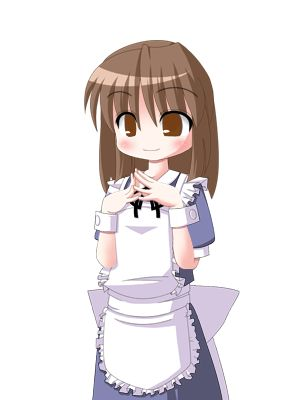
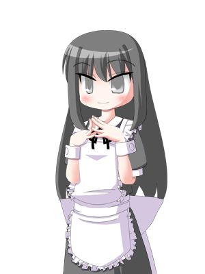
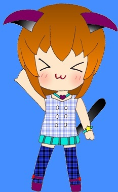
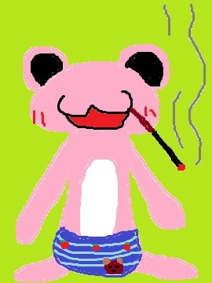

| スナックぴんくの営業日誌: 二冊目 | |
| バーバヤガ | |
| (2015) | |
秋（成人済女性） 「スナックぴんく」のオーナーである。スタッフの中では魔術は一番よく使える。
雪（成人済女性） 秋の親友、恋人である。一面も見せている。食べ物が好きで、オレンジなどの柑橘系が好きだ。
椿（未成年少女） 妖精である。手際は悪いが、元気はある。若干すけべである
ぺろちゃん（謎） カエルの人形であった。過去形であるのは、謎が多いため。武力に長け、酒とタバコを愛している。
とある国の、とある場所でスナック兼カフェを経営している。経営者は二人、前述の秋と雪だ。店員として自動人形のぺろちゃんと椿が生成されている。
妖怪や妖精など、この世ならざるものを相手に商売をしている。彼らの毎日の疲れを癒すため、秋たちはこの店を経営している、というわけだ。
次のページあたりから本文がスタートします。お楽しみいただければ幸いです。
「新装でもすんのか」
「その通りよ」
ぺろちゃんと秋、雪と椿もいる。四人は貸店舗の中で片付けを始めていた。
「ちょっと入口がずれるのよ」
「はぁ？」
ぺろちゃんが動かせるテーブルや椅子を端に寄せながら素っ頓狂な声を上げた。雪と椿は聞き流しているのか、理解しているのかせっせと食器や家具を磨いていた。
「ずれるというか、増えるというか」
「オカシな世界だぜ、この島も」
解く島、あらゆる世界と繋がるこの島は油断していると新しい世界とつながってしまったり、既存の世界との接続が外れてしまうことがある。世界が生きている以上、変動は当然のことだ。
「シルヴァーナとも会えなくなるかも」
「馴染みの客がいなくなるのはキツいな」
秋とぺろちゃんは無駄口を叩きながら掃除をしている。普段も掃除はしているが、細かいところはなあなあにしていた。とことん掃除をしなければならない時期だということだ。
「魔力のコントロールができる子はいいとしても、魔力そのもので動いている子は......もしかすると会えなくなるかも」
「厄介なこったね、そりゃあ！」
ぺろちゃんはあまり気にしていない。どんな状況であっても酒を飲みカクテルを造るだけだ。つまるところ、変化に乏しいということだ。自分の世界を確立しているとでも言えばいいか。
「引越しみたいなものだけど、そうねえ......隣町に移るようなものよ」
「大体わかったわ」
ぺろちゃんが最後のテーブルを磨き終えた。雪と椿は倉庫を掃除しているようだった。ぺろちゃんは倉庫を気にしていた、もしかしたら酒瓶を割られてしまうかもしれないからだ。
「タカい酒もあんのに、大丈夫かね......」
「そういえば、お酒の入荷とかはぺろちゃんに任せっきりだったけれど」
秋がにっこりと笑った。ぺろちゃんはそんな秋のことを見ていなかった。雪と椿の楽しそうな声が聞こえてくる。倉庫でどんな楽しいことがあるというのだろうか。
「豆狸は出したんだよな？」
「ええ、それとぺろちゃん。お酒のことなんだけど」
「心配だ......」
ぺろちゃんは秋の小言を回避しようと必死だった。秋の言いたいことは分かっている。カクテルを作った量と在庫の量が合わないのだ。「試飲」が過ぎたのだ。
「昨日夜行ちゃんに出したお酒も」
「アレはアレだよ、アレからアレしたやつだからな。アレなんだ」
「どれなのよ、結局」
秋がさらに追求する。今日という今日は我慢の限界だったらしい。秋はぺろちゃんをきつく見つめている。逃げられないはずなのだが、ぺろちゃんは動じていない。
「味の変わりやすい酒もあるからな、あいつらに任せてていいものかどうか」
「大丈夫よ、今期はどれくらい飲んだのかしら」
ぺろちゃんが倉庫に入ろうとしたのだが、腕を掴まれてしまう。なにか魔法がかけられているらしく、秋の手はぺろちゃんから離れない。吸い付いているかのようだ。
「まぁ怒るなって。ちょっとヤラかしただけだ。そんなに減ってねえって」
「今月のお給料、少なかったわよね」
「そういうことだ。あんまりイジめんな」
ぺろちゃんは容疑者なのだが、被害者のように振舞っている。被害者には似合わない憎たらしい笑みを浮かべている。ふてぶてしく、カエルの名に相応しい顔だ。井の中のカワズだ。
「でもね、今月もちょっと厳しいのよ。ペロちゃん、昨日も少し飲んでたでしょう」
「毎日少しずつ、だ。塵も積もれば山となるんだ」
「本当に山にしちゃだめよ」
秋はぺろちゃんの腕を掴みながら頭を抱えている。ぺろちゃんが首を伸ばして倉庫を見ると、雪が瓶を開けているのが見えた。秋には見えていないようだった。
「おい、あいつ飲んでるぞ」
「雪がそんなことするはずないわ」
秋は取り合おうとしない。ぺろちゃんにはしかりと雪が酒を飲むのが見えていた。次々と酒瓶を開けている。空気に触れると酸化してしまうはずだが、構わないようだった。
「いや、マジで。ホントに」
「言い逃れしようったってそんなこと無駄」
秋はやはりにこりと笑っている。ぺろちゃんが反省するまでは離さないつもりなのだろう。
「いや、確かに悪かったけどヨ、今は雪が」
「謝るのならもっとキチンと謝ってもらわないと」
「............」
ぺろちゃんは酒が開けられる音がするたびにどの酒が開けられたのかを確かめている。ぺろちゃんの頭の中には全ての酒の在庫があるのだ。把握しきっているのだ。
「あれ高いやつ......マジでか」
「......雪とぺろちゃんは違うのよ？」
ぺろちゃんは自分の行いを少し恥じていた。信頼されていないとはこうも不便なものなのだ、と思い知らされていた。
「......分かった。どうしたら信じてくれる」
「ふふ。試飲するな、とは言わないわ。ただね、同じお酒で何本も開けられるのは少しオサイフに厳しいの」
「分かった。ガチで管理が必要な時にしか飲まない。あと付き合い酒以外は飲まない。どうだ？」
秋は少し考えている。すると、ぺろちゃんの腕から秋の手が離れた。
「真実を見てきなさい」
「さっきのこと、肝に銘じておくよ」
ぺろちゃんはしっかりと秋と握手すると、雪のもとへ走った。秋もそれに続く。
雪は酔いつぶれていた。秋の予定では、雪は酒を飲まないで、ぺろちゃんに反省をさせるだけの予定だった。音を立てるだけ、飲むふりをするだけ、それだけのはずだった。
「やぁらかしやがってぇ......」
「ぅっく......うぉぉぉおおお......」
「秋ねーちゃん、雪ねーちゃんが！」
椿が秋の方を見ると、秋は魔力を練りこんでいた。ぺろちゃんは椿を連れて倉庫を出た。
「ツバキ、いいか。ワルいことをするとああなるんだ。オレもやられた」
「へへー、わたしはアンバイを見極めてるから！」
雪の絶叫が聞こえた。火照った体に凍てつく氷の粒が侵入した。服の中で氷が転がされている。
「ぎぶ、ぎぶ、ひゃああああッ」
「せいぜい風邪でも引いて寝込みなさい」
「ごめ、ごめぇぇ......わかったぁ！」
ぺろちゃんは、椿のためにオレンジジュースをピーチジュースで割ったものを作った。甘いものが好きな椿にはうってつけのものだった。
また、新しい季節が始まるのだ。
つづく
「オイ、夜行がヘンなの連れてきたぞ」
「石......オッパショ石ね。ようこそ、いらっしゃい」
秋が少年の形をした石像をカウンターに連れた。ガタゴトと無言で歩いているオッパショ石は、夜行の知り合いのようだ。
「今日は......人が少ないから......気兼ねすることないからね」
「............」
秋はすかさずぺろちゃんに視線を送る。ぺろちゃんは秋がなぜ自分を見ているのか分かっていない。
椿がオッパショ石に興味を示したようで、爪で引っかいている。もちろん傷が付くことはないが、オッパショ石は居心地が悪そうだった。
「椿ちゃん、オイタはほどほどにね」
「はぁい。にしてもこの人、スゴくアレだねえ、石だねえ」
椿がきゃあきゃあとオッパショ石によじ登ろうとしていた。夜行はふわふわのタマゴサンドを食べている。
「無口なんです、この子......でも、悪い子じゃなくて。一緒にいると、落ち着くんです」
「ふふ、そうね......この子はただ、いたずらが好きなだけだから......」
秋はオッパショ石がどのような妖怪であるか分かっている。あえて距離を取ることはしないが、無理に距離を詰めようともしていない。自然体なのだ。
「にしてもよォ、石が動くってスゲぇよな」
「............ぬん」
照れているのか、オッパショ石は奇妙な声を漏らし、オレンジジュースに口をつけた。きいん、と冷えているジュースがオッパショ石の喉を刺激していく。
「スダチよりかは飲みやすいだろ」
「ん......んん......んんん......」
オッパショ石はやはり無言だ。そんなオッパショ石を、とうとう椿が登頂したのだった。
「見晴らし良好！」
「椿ちゃん、本当に......いたずらはほどほどにしてね」
「秋ねーちゃんからはこのお店がこんなふうに見えてるんだね」
オッパショ石は早速、椿に慣れたのだろう。あまり気にした風でもなかった。肩車をするような形になり、夜行と頭が並ぶ。夜行は椿のことを微笑みながら見ていた。
「むん......むんんん......むん」
「ん、ごめんね、そろそろ降りなきゃ......」
椿がぴょおん、と飛び降りた。そのままテーブルに注文を取りに行く。いつもの風景に戻ったのだった。
「最近はなにをしていたの？」
「パレードの......調整......でしょうか。大したことはしていないのですが、今度のお仕事は大きなものになりそうです」
「一回見てみたいモンだけどな、百鬼夜行っての」
ぺろちゃんがタバコに火をつけた。くわえタバコをしながら自分の昼食を作り出した。食パンにドレッシングとレタスを挟んだだけのサンドイッチと、ブラックコーヒーだ。
「あ......それ......」
「材料はあるからな、まだ作れるぞ。だけどこんなヤスいのでいいのか？」
ぺろちゃんは夜行に自分のサンドイッチを分けてやる。嬉しそうな夜行は、更に半分にした後にオッパショ石とわけあった。
「むん......むん......」
「ん、なになに......うん。うん......うん。そうだね、ちょっと頼んでみようか......」
ぺろちゃんが訝しんでいる。こういう時のぺろちゃんの勘は当たるのだ。なにか面倒なことを頼まれそうな、そんな予感がしたのだ。
「さぁ、ぺろちゃん。出番よ」
「これ吸ってから、マジで。吸ってからな」
ぺろちゃんはほとんど吸殻となったそれをもみ消し、オッパショ石の隣に立った。
「どうせアレだろ、力比べ」
「半分は正解、でしょう？」
「はい......ぺろさん、後ろを......」
ぺろちゃんが言われた通りにオッパショ石に背中を見せた。ずしん、とぺろちゃんに背負われるオッパショ石。
「見た目よりも重いな。それでどうしたいんだ、これ」
「オッパショ石は......背負われて散歩がしたいそうで......それで、ぺろさんなら、と......」
「はいよ、行ってくるぜ」
ぺろちゃんがオッパショ石となにかを話しながら店を出た。ぺろちゃんの昼食は食べかけであった。
「力持ち、なんですね」
「あれはあたしたちの......自動人形だから」
「そういうもの、なんですね」
夜行が自動人形に興味を示している。秋は簡単に説明を始めた。ゴーレムと似たようなものであるが、すべてが自動であり意思を持つ。性行為なしに新たな生命を誕生させた、とそういうことだ。
「......で、つまりは魔力の塊だけども、だんだんと自分の肉体をもつ、と」
「ちょっと難しいです......ねこちゃんも、自動人形なんですよね......」
「まぁ、一応はね」
テーブルの客に触られたくないところを触られたらしく、客の鼻に人差し指を突っ込んでいる。本来なら苦情も来るのだろうが、椿はいつもと同じことをしているだけだ。
夜行は静かに紅茶を飲み始めた。季節外れなほどに日差しが強く、冷房を入れたほうがいいのではないか、と考えさせられるほどだ。今は窓を開けることで、風を取り込んでいる。
「帰ったぞー」
「あら、お疲れ様」
「むんむん！」
オッパショ石は随分と機嫌が良さそうだ。ぺろちゃんが静かにオッパショ石を床に下ろす。オッパショ石は、夜行の隣に戻り、少し乾燥してしまったサンドイッチを食べ始めた。
「おんぶつったってなあ、練り歩いただけだぞ、俺」
ぺろちゃんも食べかけであったサンドイッチを頬張った。日常という牙城に異常はないようだった。
「外は忙しそうだったな。連休間近ってとこか」
「ああ、外、はね......そういう時期になるかしら」
連休、という言葉に椿が反応した。テーブルで愛想を振りまいていた椿が秋のもとへやってくる。
「連休って、あのお休めるやつかなっ！」
「そうよ、お休みがたくさんある日、よ」
「へへへ......おやすみ......へへ」
椿がだらしのない顔になる。連休というものが珍しいのだろう、どんなものになるか想像しているようだ。
「ツバキ、おめぇ......その石小僧をおんぶして十歩歩けたら俺がお前の分働いてやる。連休になるぞ」
「え、ホント？」
椿がオッパショ石を担ごうといろいろなところに手を回している。少ししていると、どうやら都合のいい体位が取れたようだった。
「うおおおおおおおッ！」
「ビクともしねえな」
「まぁだまだぁぁぁぁッ！」
「オッパショくん、困ってるわよ」
椿は額に汗を浮かべて頑張っている。オッパショ石は、どうしたらいいのかと迷っているようだった。
「ねこちゃん、頑張って......！」
「わたしはぁぁぁぁッ、連休のためぇぇぇ！」
途端、椿の腕の力の使い方を間違えたのか、すっ転んでしまう。オッパショ石はあたふたしていた。
「ツバキ。連休はそのうちやってくる。秋を見てみろ、連休くれそうな顔してないか？」
「えっ......わたしには......コワい顔に見えるケド......」
いたずらが過ぎたのだろう、秋はちょっと不機嫌になっていた。
「椿ちゃん、そんなに元気があるなら......お休みなんてしばらくいらないわね？」
「おっと、それは......キツいです、おねーさま......」
「少し反省したほうがいいわ」
秋はぺろちゃんの方を見た。ぺろちゃんは二枚目のサンドイッチを食べるところだった。
「けしかけたのはぺろちゃんよね」
「なんのことやら」
「椿ちゃんのお世話......頼めるわよね」
面倒そうにがくがくと頷くぺろちゃん。しばらく許されていた制服も、復活してしまうかもしれない。ぺろちゃんの趣味に合わないひらひらのドレスのような制服だ。
「なんつーか、ジゴージトクだな」
「もう......やりすぎちゃ、だめなのよ」
スナックぴんくは、この日もいつも通りの営業をしていたのだった。
つづく
「おい、一つ目コンビが来たぞ」
「あらあら、いらっしゃい」
秋が夜行とサイクロプスを招き入れた。手をつないでいるところを見ると、二人は恐らく「そういう関係」なのだろう。
「甘いケーキを作ったの。食べる？」
「あ......はい」
サイクロプスは大きく逞しい体を小さな椅子に乗せた。少し居心地が悪そうだ。
「......紅茶、でいいかしら。今日は素敵なのが入ったのよ......」
「......あの、その」
夜行がなにかを言おうとしている。秋はつとめて「言わせないように」している。ぺろちゃんはその「夜行の言いたいこと」を知っていた。
「紅茶ねえ。ミルクでも砂糖でも入れてみますかってんだ」
「うるさいわね」
秋はぺろちゃんを黙らせ、ケーキを切り分けさせる。その間に秋は紅茶の準備をしていた。
サイクロプスは些事に拘らないのだろう、ぼんやりと夜行の隣に座っている。大きな単眼がまどろんでいる。椿がサイクロプスの大きな躯体に驚いていて、近づこうともしない。
「おジョウヒンな紅茶なんてな。笑っちまうぜ」
「いつまでもブチブチ言わないの」
サイクロプスがカップを壊さぬように紅茶をすする。一口で飲み終えてしまうと、再び沈黙してしまった。
「かれ、は......その。恥ずかしがり屋で、その......ええっと」
「大丈夫だ。秋もそのうち折れる」
ぺろちゃんが面倒そうに夜行に伝える。そのうち、がいつになるかは分からないが、時間が来ればこの店もスナックに変わる。それを待つだけだ。
ぺろちゃんが切り分けたケーキを、サクロプスが食べ始めた。瞳を閉じてゆっくりと味わっている。張りつめた、とまではいかないまでもぎくしゃくとした時間が流れている。
「味は、どうかしら」
「......うん」
はじめてサイクロプスが声を出した。味はそこまで悪くないようだ。サイクロプスの舌に合うかどうかまでは分からなかったが、悪くないとのことを聞いてほっとした秋だった。
「じゃあ、ゆっくりしていってね。この店は暇なものだから」
「忙しくなっても困るんだがな」
ぺろちゃんが皮肉を吐いた。ケーキの香りにつられて椿がやってきた。迷わず夜行の膝の上に座る。
「カレシさんデッカいねえ！」
「あ、うん......その、たまたま......」
なにがどう「たまたま」なのかは分からない。ぺろちゃんは「百鬼夜行」の時に、その
「たまたま」が起こったのだろう、と推測した。そして、それは恐らく正解なのだ。
「一つ目って......そんなに多いものじゃなくて......話をしてたら......ね？」
「え、一つ目ってやっぱりナンかあるの？」
椿がサイクロプスの腕を凝視している。何に惹かれたのかは分からない。だが、興味を持っている。
「目玉が大きいと......シャンプーが入りやすいし......花粉症とかになると......」
「あとは、水泳なんかも苦手だ」
（ゴーグル入らないんだ......なるへそ......）
椿は敢えて言葉にはしなかったが、色々と苦心することがある、と察していた。
「......それで、その......このお店の......」
「分かった。分かったわ。言わなくても大丈夫よ。それじゃ、ぺろちゃん？」
「あいよ、ようやくか」
ぺろちゃんが数種類の酒瓶を取り出した。酒をサイクロプスを連れてきたのも、この店のカクテルを試させるためだったのだ。秋はそれを認めたくないが故に、紅茶やケーキを用意していた。
「アイサツがわりに、これだな」
「............」
サイクロプスが大きなジョッキに注がれたカクテルをまじまじと見つめている。大きな瞳に吸い込まれそうだが、実際は口に流し込んでいた。
「......うまい」
「ほぉ、いけるな」
「わ、わたしは......くらくらします......」
夜行はあまり酒が強くない。対してサイクロプスは酒にあまり酔わない体質のようだった。ぺろちゃんはにやりと笑い、サイクロプスと同じカクテルを同量飲んだ。
「ははは、ここからだよな、なあ？」
「勝負......」
ぺろちゃんが最初に飲ませたのはウイスキーとグレープフルーツ、ドライベルモットをシェイクした「マイアミ・ビーチ」というものだ。ウイスキーなどの渋みがあるが、それをグレープフルーツがすっきりとまとめ上げているものだ。余談だがラムベースの同名カクテルに注意してほしい。
このカクテルは若干アルコール度数の高いものとなっている。そういうわけで「腕試し」と「挑発」の二つの意味を合わせて出したものだった。
ぺろちゃんが再びシェイカーを握る。作り上げたカクテルは深紅のものだった。
「ほいよ、デプス・ボムだ」
「またそんなものを。どうするのよ」
「......大丈夫」
サイクロプスがカクテルを一気に飲み干した。かたん、と優しくグラスを置く。ぺろちゃんもそれに倣った。
「こいつぁ、あとからキくってな」
「まだまだ......」
「ぺろちゃんはともかく、彼が落ちたらどうするつもりよ」
デプス・ボム。その名は爆弾を意味する。空から落とす、潜水艦への爆弾だ。深く、静かに潰してくる爆弾なのだ。しかし、ぺろちゃんもサイクロプスも、別段に変わったところは見られない。
また新たにぺろちゃんがカクテルを作り出す。秋は食べ物、簡単にサンドイッチを作っている。空腹時に酒をしこたま飲むのはいけないことだ。意を悪くしてしまうかもしれない。
「......あんまり心配かけさせてもアレだからな。これでシマイにしようや」
「......分かった」
緑色のカクテルが出てきた。ミントの香りが強い。グラスの底にチェリーが沈んでいる。グラスの縁には砂糖が振り掛けられていて、砂浜を思わせた。
「青いサンゴ礁」
「............」
二人は、一気にそれを飲み干した。甘さの中にアルコールの強い刺激が、ミントの刺激が主張している。
「......引き分け、か」
「お前......強い......」
酔っているのか、サイクロプスは少しずつ饒舌になってきていた。ぺろちゃんは敵意ある笑みを浮かべたままだ。
「さぁさぁ、お酒はおしまい。椿ちゃんが興味津々だわ」
「わたしも......オトナになったらぺろちゃんと勝負したい！」
「ネコマタになるまではオアズケだな」
サイクロプスの瞳が緩んだ。目じりが垂れてきていた。安らいでいるのだろう。夜行がサイクロプスに寄り掛かる。しっかりと受け止められている光景は、まさに恋人であった。
「はい、どうぞ。本当はお茶漬けのほうがよかったかもね」
秋が梅ソースを挟み込んだ和風サンドイッチを出した。椿にも食べられるように、と配慮されたものだ。
「んっ、スッパいけど......おいひい」
「白湯(さゆ)も飲むといいわ」
ぺろちゃんは一気にお湯を飲み干した。しかし、サイクロプスはサンドイッチにすら手を付けない。
「梅、嫌いだったかしら」
「......しみる」
ぺろちゃんは、顔をそむけた。巨大な単眼であると、梅の酸味が目に染みるそうだ。秋、椿、夜行は声を漏らさずに笑った。
「お前ら、本当にアレだな、サイテーだな」
困った顔をしているサイクロプスに、ぺろちゃんはオレンジジュースを出した。それも若干染みるようだが、これは酒で慣れているらしい。
サイクロプスと少し、本当にぽつりぽつりと話し、空が夕闇に覆われる時間となった。見送りを済ませると、店内には秋たち店員しか残らなかった。
「ああいうのも、いいものよね」
「さぁな、俺には分からん」
「わたしはー、食べ物！」
てんでまとまっていない秋たちだったが、これからもスナックぴんくを経営する。カクテルのように、まとまりながら。
つづく
静かな店内に一人の少女がやってきた。困った表情だ。まっすぐに秋のもとへとやってくる。店員といえば、今日は秋とぺろちゃんしかいなかった。
「あら......いらっしゃい」
「こいつも魔女ってヤツか」
「あ、あの......」
黒いローブ、シルクハット、樫の杖。見た目は魔法使いであった。かたん、と杖を置く魔女らしき人物。口ごもっていて、何かを伝えようとしているのだが、どうにもまごついていた。
「見かけない顔だけど、どうしたのかしら」
秋が優しく声をかける。ぺろちゃんは黙ったまま煙草に火をつけていた。魔女はやたらとぺろちゃんを気にしていた。
「......ああ、それは」
秋が魔女の首に下がっているお守りを見つけた。木製のもので、奇怪な紋様が描かれている。秋にはそのブローチに見覚えがあった。
「なにか相談事でもあるのね。そのブローチ、大切にしなさいね」
「は、はい......」
「なんだ、知り合いか」
そこへ雪が帰ってきた。手提げカバンを携えている。ぺろちゃんはあからさまに不機嫌になった。
「ぺろちゃぁん、試着だよぉー？」
「約束は約束だからな......」
ぺろちゃんは奥の倉庫に引っ込んでしまった。続いて雪も倉庫に入っていく。
「あの、ピンクの......」
「ええ、ゴーレムの一種......だけど、自立思考で完全に自動人形よ」
「............」
秋は察しがついた。この魔女も、同じことをやろうとしているのだ。しかし、相談に来るということは失敗続きなのだろう。何が原因なのか突き止めなければならない。
「それで......なにか相談があるのでしょう」
「わたし......わたしにも、ああいうのができるでしょうか......」
魔女はぽつぽつと喋りだした。同じく自動人形を作りたい、と話している。
「どうやっても......失敗するんです......」
「新しい命を作るのは、とても集中力がいるの。並大抵じゃできないけど......」
秋は異質な雰囲気を感じ取っていた。何かが違う。そんな気がしている。その違和感がどこから来るのかは分からない。ただ、直感が不吉なものを知らせている。
「どうやっても......だめなんです。どうしても、動かなくて......思うように動いてくれなくて......」
「あたしだってこの島じゃなければできなかったわ。とても強い魔力が必要なの。あなたは......確かにあなたは強い魔力を持ってる」
ただ、高い魔力を持っていたとしても向き不向きはある。それだけじゃないような、そんな気がしている秋は、どうにかして魔女から「本当は何をしようとしているのか」引き出そうとしていた。
「自動人形の基礎として、形を作る。これはいいわね？」
「......はい、それは......大丈夫、だと思います」
「............」
煮え切らない態度だったが、ここまでは大丈夫であるようだ。秋は紅茶を淹れた。何かが間違っている。それは確かなものに思えた。だが、引き出すにまだ十分ではないのだ。
「それじゃあ......命を吹き込むのにイメージを固めた人形に、循環するイメージの魔力を詰めるの。ここは......感覚だから説明しにくいわね。血液が体をめぐるイメージね」
魔女は口をきゅっと閉めた。どうやらここで詰まっているらしい。秋はぺろちゃんが置き忘れていったタバコを手にした。
「これをコピーするわね」
「はい」
秋が魔力を込めた。ぼんやりしたオレンジ色のタバコが二つになった。しかし、コピーされたタバコの箱はどこか儚げで影が薄い。
秋は続いてコピーされたタバコに命を吹きこむ方法を教える準備を始めた。
「このタバコは......まぁ、四角形だけど。右上から時計回りに魔力を流し込んで、巡らせるようなイメージで......」
「............」
魔女は集中を始めた。瞳孔が開いている。秋は黙ったままそれを見ていた。
「............」
「............」
やがて、タバコが意思を持つようになった。喋りだしている。
「できたわね」
「............」
「残り十本、残り十本だぜ」
タバコは単純な言葉しか話していない。それもタバコの残り本数だ。あとは練習を重ねれば「自動人形」は成功するだろう。しかし、魔女はどこか納得できていないようだった。
「......これじゃ、ない......と？」
「............」
「教えて。なにをしようとしてるの」
秋は、とうとう自分の持っていた疑問をぶつけてしまった。魔女は泣き出した。静かに、声を出さずに涙をこぼしている。秋はほぅ、と小さなため息をつくと紅茶を一口すすった。少し温くなってしまっている。
「その、あたし......あたし......」
「まぁ、ゆっくり話しましょう。一日は長いわ」
「............」
魔女は紅茶とともに出されたクッキーを食べた。そのクッキーをつまんでいる手にも涙が落ちる。涙は魔女の服を濡らす。袖で目を何度拭っても涙は溢れてくる。秋は、ただただ静かに魔女が落ち着くのを待っていた。
「わたしは......わたしが作りたいのは人形じゃないんです......」
「と、いうと......もしかして、素材はあるってことね？」
秋は魔女の作りたいものがなんとなく理解できた。しかし、それは本当に邪悪な人間のやることだ。それに、作り上げたものは自動人形よりも知能の低い「人形」である。
「死んだ彼が......彼を、彼を......生き返らせたくて......」
「死体を、動かそうと。なるほどね」
ゾンビを作る方法なら簡単だ。しかし、それは術者の思うとおりに動くだけの人形である。この魔女の望んでいることは、それではない。
十数分、時間がたった。魔女は泣き止んでいた。しかし、目は真っ赤だった。充血している。死んだ人間に思いを馳せるのは、仕方のないことかもしれない。しかし、生き返らせるとなると、それはまた別の問題なのだ。
「彼氏のことを、本当に愛してるの？」
秋が単刀直入に聞いた。魔女は驚いた顔をしているが、はっきりと頷いている。秋は首をかしげ微笑む。
「その愛は間違ってるわ。死者は死んでいる状態が普通なの。当たり前のことよ」
「で、でもっ......！」
「永遠に......安らかに眠れ。そう願われたはず。それをむりやり起こすのは正しいこと？」
魔女はうつむいてしまった。秋は再び紅茶を淹れなおした。冷めてしまった紅茶は一気に飲まれた。
「新しく作り直したほうがいいわ。あなたにはそっちの方がいい」
「............」
「死者を生き返らせても、死人は死人よ。以前の彼が復活するわけじゃないわ」
温かな紅茶にミルクが注がれる。混ざり合い濃い乳白色ができる。秋は砂糖が必要かどうか尋ねたが、何も言い返されなかった。
「......死者を生き返らせるのも、基本的には自動人形と同じよ。でも、とても大変な、それこそいばら道よ」
「............」
「それに、できあがったものは、もしかしたら取り返しのつかない、ただの死体。それで、そうなった彼は幸せだと思うかしら。思うのなら、やってみればいいわ」
秋は魔女の前に腰かけた。カウンターを挟んで向かい合っている。スナックさながらの光景だ。
「もし、本当にやるのなら。魔力を高めてから挑戦なさい」
「......ありがとう、ございました......」
シルヴァーナも、これを望んでいたのかもしれない。シルヴァーナから受け取ったであろうお守りが、温かな光を漏らしているようなイメージが、秋には見えた。
「わたし、自動人形の練習をします。彼のことを、苦しめたくない......」
「そう。それなら......少し練習すればいいわ。彼のことを強く思い出して、彼のイメージを強く投射すれば......それでいいから」
秋は一安心し、肩の力を抜いた。そこで雪とぺろちゃんが倉庫から出てきた。
「だから、俺はこんなん着たくないんだよ」
「暴れるでない、愛いやつめ！」
ぼろぼろになったメイド服を着たぺろちゃん。丈が合っていないのでスカートから下着が漏れている。
「スナックにメイドはいねえだろが」
「いるかもしれないじゃないかあ。それにこっちの方が笑える」
ぺろちゃんは秋がコピーしたタバコを手に取った。ライターを倉庫に忘れたようで、倉庫に戻っていった。
「わたし、元気が出ました。ありがとうございます」
「お、お、なんか解決したの。ぺろちゃんがメイドだもんねえ！」
「ふふ、そうかもしれないわね」
じゃあ、と魔女と雪が店の外に出ようとした。秋が思いついたようにタバコを手にした。
「自動人形、練習するのよね。これ、あげるわ」
「あっ、ありがとうございます！」
秋と雪は魔女のことを見送った。しとしとと雨が降り始めていたが、じきにこの雨も止むだろう。
二人が店内に戻ると、ぺろちゃんが腹立たしそうに「タバコ」と話していた。
「お前、残り十本ってどういうことだ」
「残り十本、残り十本だぜぇ！」
秋は、間違えて本物のタバコを渡してしまったようだ。秋は黙っていることにした。
「おれのタバコが......喋りだすなんて......今日は厄日なのかよ......」
ぺろちゃんは、ぼろぼろに裂かれたメイド服で悲痛な言葉をもらしていた。
つづく
「わたしにもついにライバルが！」
「にゃぁ？」
秋が冷たい水を猫又に出している。椿がにこにこしながら猫又を見つめていた。
「ライバルってほどライバルじゃないと思うよ。店員と客だし」
「雪ねーちゃんはこのタタカイを分かってないよっ！」
今日はぺろちゃんが非番なので、秋と雪、椿が店に立っている。珍しく忙しい日で、雪が店内を早足で巡っていた。椿が猫又に気を取られているのが気に入らないのである。
猫又と椿はほとんど会話をしていない。時々、不気味に笑うだけである。他にはなにを話すわけでもない。笑いが漏れることがあるのだが、本当にそれだけだ。
「椿ちゃん、雪が大変そうだから......少しは、ね？」
「あ、はぁい。ふふふ」
猫又は椿に手を振る。二股に分かれた尻尾が左右に振れている。ご機嫌なようだ。
「ツバキは面白いねぇ、いいよぉ」
「......そう、ね。あの子はいい子よ」
秋はグラスを磨いている。傍らにはツナとマヨネーズを和えたサンドイッチの具材がある。炒り卵を混ぜたら完成である。
「ふっふーん、それ、二つもらえる？」
「ええ、出来上がったらいいわ」
秋が思い出したように冷蔵庫を確認する。炒り卵は程よく冷えているようだ。菜箸で簡単に混ぜ合わせると、食パンを四枚取り出し斜めに切る。出来上がったそれは二枚の皿に並べられた。
「どうぞ、この店で一番人気のあるものよ」
「安いからね」
「雪、それはないしょ」
秋が自分で飲むのに紅茶を淹れる準備を始めた。雪が忙しそうに働いているのを眺めている。
昼ごろになった。客足は落ち着き、雪がカウンターに戻ってきた。あとは様子を見るだけでよさそうだ。椿も、カウンターに戻ってきた。
「ふふふー」
「おかえり、ツバキ」
猫又がサンドイッチの皿を一枚椿に渡した。椿は何も言わずに受け取り、食べ始める。
「あきー、ボクもアレ食べたい」
「はいはい......ちょっと待っててね」
秋がサンドイッチを作る。秋が背中を見せたその時だった。椿が大きな声で笑い出した。なにかよからぬことを考えているときの笑いだ。
「二十のドア、やってみようか」
「フフフー」
「え、なにそれ？」
雪が二十のドアについて、椿に聞いた。しかし、説明したのは猫又の方であった。
「質問者があるものを思い浮かべる。イエスノー回答できる質問でそれを当てるのだ」
雪がなるほど、と相槌を打った。落ち着いた店内、ジャジーなピアノのなる中、二十のドアをやることとなった。
「最初はユキさん、お願いします」
「ん......おっけ」
雪がなにか思いついたようだ。秋は食パンを棚に戻している。
「それは......軽いもの？」
「軽いね」
「美味しいものよね」
「うん」
椿は質問を考えているようで、何も喋らなかった。秋はどうやら、雪が何を思い浮かべているか分かっているようだ。
猫又が延々と質問を繰り返している。キャンディでもなくチョコでもなくおにぎりでもない、美味しいもの。そして軽いもの。他にも条件はあるのだが、猫又は当てられずにいた。
「雪。そろそろそれ食べちゃいなさい」
「はぁい」
猫又にも答えが分かった。サンドイッチであった。と、とうとう何も喋らなかった椿がにやりと笑う。
「チーム戦にしよう」
「えっと？」
椿が提案した。まずペアを組み、先攻と後攻を決める。先攻のグループは回答者と出題者を、後攻は回答者のみで構成する。出題を当てられたグループの勝利、というわけだ。見かけは出題された内容が分からないのでイーブンである、といえる。
「ふふふ」
「フフフ」
猫又と椿がペアを組んだ。とてもじゃないが正々堂々と勝負をしよう、という顔には見えない。
「企んでるね」
「どうかなー、ふふふ」
椿がはぐらかしている。しかし我慢できないのだろう、顔が緩んでいる。
「そっちが先攻でいいわ。始めましょう」
「わたしがねえ、アレするから......猫又よろしく！」
「うんむ」
猫又の尻尾がぴん、と上を向いた。雪は椿に何を質問しようかと悩んでいる。
「それは......赤いものですな？」
「うん、赤いねえ。ふふふ」
「トマトですな」
椿がぴょこん、と跳ねた。どうやら正解のようだ。猫又の尻尾もゆるむ。
「うわっ、はやいッ」
「雪、これはそういうゲームなの」
「............」
椿は何も言わない。しかしにやにやと嘲笑っているかのようだ。次は雪が出題者となった。雪は納得がいっていないようで、難しいものを考えていた。
「......うん、いいよ」
「雪の考えてるそれは、小さいわね」
秋が質問をする。イエスのようだ。椿と猫又は何も言いださない。相手の質問を引き出すテクニックなのかもしれない。
「多分......ぺろちゃんが持ってるものね」
「うんっ、それそれ！」
「にゃる、ぺろちゃんとな？」
猫又が声を漏らした。しかし、はっとして平静を装った。椿が猫又を睨んでいた。猫又は申し訳なさそうに微笑んでいる。
「ほらほら、あたしが当てちゃうわよ。椿ちゃん、いいのかしら」
「うー、うー、タンマ」
「ふふふ」
秋は答えが分かっているようだ。椿に分かるように、だろうか、次々と質問を繰り出していく。
「それは音がなるわね？」
「うん」
「高いものも安いものもあるわね？」
「うんうん」
「結構、手入れが面倒なのよね」
「そうそうそうそう」
秋は確実に雪の考えているものが分かっていた。ぺろちゃんはタバコを吸う。そのお供である。しかし、椿はタバコを吸わないので分からない。
「にゃっ、分かったぞ。マッチだ」
「ぶー、はずれ」
雪が「してやったり」といった顔で猫又を見る。猫又はかなりの自信があったようだが、不正解だったことに驚いている。そこで、椿がようやっと正解にたどり着いたようだ。
「あれだっ、あのカシャッてなるやつ！」
「あー、それそれ。それの名前は？」
「ええとぉ、えっとぉ......」
いつもならすぐに名前が出るのだろうが、秋と戦っているという意識が強いためか度忘れを起こしてしまっている。
「......オイルライター、よね」
「せーかぁーい！」
雪が椿の悔しそうな顔を見て満足している。椿は本当に悔しそうだった。猫又はオイルライターという単語を知らなかったようだ。
続いて、猫又の出題であった。椿は一変して満面の笑顔だ。
「さぁ来い。さぁさぁ！」
「フフフ、いいぞい」
雪が質問を考えている。こういったゲームの場合、何か基準を決めて絞り出すのが効果的であろう。大きさや重さなど、大別できるものが望ましい。
「それは大きいでしょう！」
「フフフ、そうだとも」
椿が質問を始めた。大きいもののようだ。なお、曖昧なものに関して、出題者の認識で判断すると、答えが出たときに盛り上がる場合がある。
「雪ねーちゃぁん、いいのかなー、わたしが当てちゃうよォ......！」
「い、色はっ、色は赤でしょ！」
「いいや、赤くないな」
猫又が余裕たっぷりに答える。秋は喋らない。何かを図っているようだ。
「長いよね、長いんだよね？」
「ほっほー、長いね」
「それに海の中にいるよね」
「いるのー、いるのぉ、たしかに」
椿は何故か猫又の考えているものが分かっているようだ。とはいえ、だからこそペアを組んだのだろう。
「あっ、分かった、クジラ！」
「違うのー、ほっほっほ」
「ネコは基本的に食べちゃダメな......それでいて打ち上げられてるアレ、だよねぇ」
「そうよのー、そういうものだぞ」
猫又と椿は相性がいいのか、にこにこしている。雪がうんうんと苦しんでいるのを見て、秋が見かねてしまった。
「大王イカ、よね」
「ぬっ......そうじゃ」
椿が悔しそうな顔をしている。まさか秋が当てるとは考えていなかったのだろう。
「雪をいじめるのは、それくらいにしておきなさい？」
「むむー。これからなのになあ」
「フフフ、楽しかったぞ。また来るからの」
猫又が支払いを済ませて店から出て行った。椿は最後まで猫又を見送っていた。
店内は夕焼けが差し込んでいる。雪は猫又がいなくなってから椿に何度も先ほどのゲームのことを聞いていた。
「なんで当てられるの？」
「へへへー、ネコだからデス！」
椿は何度聞かれても「猫であるから」としか言わなかった。とうとう、店内から客が全員いなくなっても椿はあやふやな答えしかしなかった。
「ネコってそんなに......スゴいの？」
「スゴいよぉ、ネコはスゴいんだよぉ」
「椿ちゃんは......本当に意地悪ね。もう」
秋が、とうとう雪に教えた。猫は群れない。群れないために縄張り意識が強い。結果、テレパシーが使える、という説があるそうだ。雪はとても納得していた。
ああだこうだ、と話しているうちに、夜更けになる。このスナックは、明日もにぎやかになるだろう。
つづく
ぺろちゃんはタバコを吸っている。店内に客はいなかった。秋も椿も、カウンターにうつぶせになっている。
「今日はなんなんだろねー、秋ねーちゃん」
「こういう日もあるわよ。仕方ないことね」
ぺろちゃんは携帯電話をいじっていた。なにやらニュースサイトを眺めているらしい。あまり面白いニュースはないようで、携帯電話を眺めている、というよりも睨みつけている、と表現した方が適切である。
「ヒマ過ぎんのもロクなもんじゃねぇナ」
「そうだねぇ......そうだよォ......その通りだねェ......」
椿が不意に視線を窓の外に向けた。なにか大きなものが窓の外を動いていた。
「邪悪の化身が歩いてる......」
「何よそれ......まぁ、そういうのも歩くかもしれないわ」
椿が大きななにかを目で追っている。その大きななにかはスナックの前までやってきて、ドアを開けた。
「いらっしゃい」
「おお......見るからに邪悪で野蛮だ......」
椿が開口一番に素直な感想を述べた。やってきたのは名もなきオークだった。武器は背中に背負っているようだ。大柄な男性よりも一回りほど大きいだろうか。太陽を浴びてきたのか、陽の薫りがする。
「飲み物と食べ物、どっちがいいかしら」
「......飲み物で......」
「ここはやっぱりジャアクらしくブラックコーヒーでしょっ？」
椿が無遠慮な言葉を次々と浴びせる。オークは気にしていないのか、椿の言葉に反応することはなかった。
「水......コオリの入った、水......」
「あら、お冷(ひや)でいいのね。ちょっと待ってて」
ぺろちゃんがタバコをもみ消すと、新しいタバコに火をつけた。くわえ煙草をしながら、自分のタバコの残り本数を確認している。十分に残数があると分かると、オークに一本分けてやった。
「ニオイはごまかせねェよ。これでいいか」
「......いただく......」
ぺろちゃんがオイルライターでオークの咥えているタバコに火をつけた。オークは無表情で煙を吐き出す。ぺろちゃんに一礼を返した。
「なんだ、悩みのあるツラしやがって。ここで遠慮はいらねえよ」
「............」
秋が氷水を差し出す。ナカマルで購入したと思しき粉末の紅茶も添えられている。
「甘いのは飲める？」
「......嫌いなものは、ない......」
大柄なオークに、カウンターに設置されている小さな椅子は合わないようで、何度も腰の調整をしている。椿がオークに駆け寄って隣に立った。
「でっかいねぇ、キンニクだねえ！」
「......そう、かもしれん......」
「アグラでちょうどいいんじゃあないかなあ」
オークを無理やり立たせると、椅子をどかした。胡坐(あぐら)をかいたオークの視線は、カウンターの椅子に座った椿と同じほどの目線となった。
オークは姿勢よく水を飲んでいる。室温のせいか氷の溶けるのも早い。オークは半分ほど飲んだグラスに粉末紅茶を入れ、溶かした。その間、ずっと無言だった。
「今日はじめてのお客さんだね」
「いらないこと言わないのよ......ゆっくりしていってちょうだい」
ぺろちゃんは再び携帯電話を眺めている。時折タバコの灰を落としているが、それだけである。
「............」
「............」
オークとぺろちゃんはほとんど喋らなかった。喋った、口を開けたと思ったら「んん」だとか「あぁ......」だとか、そればっかりである。
「秋ねーちゃん、なぁんかサンドイッチとか食べたい。あのタマゴのやつ」
「そろそろお昼だし、いいわ。作ってあげる」
秋が食パンを用意する。これもまたナカマルで買ってきたものだ。椿がぴょんぴょんと跳ねている。
「......すまねぇな、いつもこんな感じなんだ」
「......気にしてない......」
オークが氷水を飲み干してしまった。グラスの底に粉末紅茶の溶け残りが溜まっている。ぺろちゃんは黙って氷と水をグラスに入れる。
「こんなもんしかねえけどな」
「............」
オークはやはり黙ったままだった。しかし、店内の空気が変わった。秋がちらりとオークを見ると、オークの瞳から涙がこぼれているのが見えた。
「んー、サンドイッチだねぇ、サンドイッチは美味しいから好きだよォ......！」
「......お前、いいな......」
オークが奔放な椿を見ている。おしぼりで目を拭うと、初めて笑顔を見せた。椿はオークが泣いているのに気が付いていなかった。
その後、オークは再び無言になった。ぺろちゃんは携帯電話でのサイト巡回を終え、再びタバコに火をつけた。オークにも分けてやろうと気を遣っていたが、オークはそれを丁寧に断った。
「......俺は、普通のオークじゃないのかも、しれない」
「ココに来れるってことはフツーじゃあねわな」
「............」
オークは言葉も少なくして話し始めた。秋にコーラとフライドポテトを頼む。秋は優しく頷くと調理を始めた。
ぽつぽつとオークが喋る。とある帝国に雇われている門番のようだった。今日はその仕事も休みであり、ふらついていたということだ。知り合いに、息抜きのできる店があると聞き、このスナックを探していた、と言った。
オークはフライドポテトにケチャップを塗らないで食べている。一本ずつゆっくりと食べていた。時折大きく息が漏れているが、ため息ではなさそうだ。
「いろいろあンだよ、ここに来るやつは。何かしらモッてんだって」
「......そう、なのか」
オークは自分のことについて、少しずつ話し出した。
もともとは山に暮らしていた魔物だったらしい。仲間が次々と帝国に雇われていき、ついに自分の番となったそうだ。そして、一定の知性を認められたために戦闘員としてではなく門番として雇われたのだった。
「......俺の、友達は。どうなったか分からない」
「別部門になっちまったら、そういうこともあるわな」
「......心配、なんだ」
オークが、再び涙を見せた。背中に背負っている武器は、何度使われただろう。見るに新品同様だった。帝国までは襲撃がなかったことを思わせる。
フライドポテトを食べ終えたオークが、コーラに手を付けた。手で口を隠し、二酸化炭素が漏れるのを隠している。音もなるべくたてないようにしていた。
「......俺は。やっぱり山でのんびり暮らしていたかった......」
「そうだなあ、働くってのはそういうモンだわなァ......」
「これから、どうすればいいか......」
ぺろちゃんがタバコに火をつける。煙がもわぁ、と広がっていく。秋も椿もぺろちゃん達の会話に混ざろうとはしなかった。椿はサンドイッチをもりもりと食べている。
「いやなら、やめちまえよ」
「............！」
ぺろちゃんが灰を落としながらそう言った。しかし、冷たく突き放したのではない。
「お前は辞められねえよ。ナカマが同じとこ、いんだろ」
「......ああ」
「お前は、そいつらを見捨てねエよ」
ぺろちゃんがタバコの火を灰皿で消す。そして秋にコーヒーを頼んだ。
「なんつーか、お前は疲れてる」
「............」
「今日は休んどけ。明日からまた、明日が始まる」
オークは何かを考えているようだ。しかし、それがどういった内容なのかまでは分からない。ただただ、時間が流れていった。
「同じ場所で働いてんだ......そのうち顔を合わせる。近いうちに連絡とれるようにしとケよ」
オークの顔が、雰囲気が、幾分和らいだ。オークがコーラを飲み終えると、背中を伸ばした。凝り固まった様々なものを解しているのだ。
「ここは、いいな」
「スナックだからな」
「また、来てもいいか」
ぺろちゃんは何も答えない。口の端が上がっている。若干挑発的な表情にも見える。
「それじゃあ......」
「またねー、ジャアクなオジさん！」
椿に微笑み、オークは店を出て行った。また来るのだろう、店から出た後に看板を眺めていた。覚えようとしているのだ。
「ぺろちゃんは、あのオジさんと仲良さそうだったね」
「アイツも......オレと同じさ」
「ふうん......よく分からないけど、そういうことなのね」
秋にも椿にも分からないのだろうが、何かを伝えることを苦手としている存在は、同類と一緒にいると落ち着くのだ。このスナックに訪れたのも、そういう縁なのだろう。
つづく
「ねぇ、ミミックとスライムってどっちがバケるの上手なの？」
「えっ」
ミミックとスライムが顔を見合わせる。どちらも「自分が上ではない」といった表情だ。椿はカウンターに座っている。
「ちょっとショウブしてみてよ。面白いじゃない」
「ツバキ、そういうことあんま言うもんじゃねえぞ」
秋は黙ったままティーカップを温めている。ぺろちゃんはいつも通り、タバコの煙を吐いていた。
「気になるじゃん。それに化けるなんてそうそうお目にかかれない」
「椿ちゃんもそのうち化けられるようになるわ」
秋がたしなめるも、椿は聞く耳を持っていなかった。勝負が始まることを前提にわくわくしているようだった。
「おネガイだよォ、化けてチョウダイよォ」
「その......え、本当にやるんですか......」
ミミックが遠慮がちに呟く。スライムはぶよぶよとしたまま喋らない。そもそも人間の声帯を持たない姿なので、喋ったとしても聞き取りづらいものであっただろう。
こうなったのも、ミミックがスナックにやってきて「世界魔術書物」を持ち込んだためだ。秋が「あれば」頼んだものだったが、運悪くこの日は椿が出勤していた。
「ソレに載ってるヤツでいいからさァ、おねがいだよォ！」
「ツバキ、今日おやつ抜きだからな」
ぺろちゃんが魔術書をめくっている。いろいろな道具などが載っていた。魔術に関するものが多数掲載されている、と噂されているもので、秋の書物コレクションには、この本がなかった。
ぺろちゃんが無言で一つの道具を指した。ぺろちゃんには読めない言語で書かれており、秋がそれを読み上げた。
「......こんなお守りあるのね。作成者は不明。これを持ってると頭の働きが鈍くなるみたいだわ」
「あっ、効果もコピーするんで？」
椿はにこにことミミックを見つめている。やれ、と言わんばかりの顔だ。
「あの......お手合わせ、していただけますか？」
「............」
スライムも了承した。勝利判定はもちろん椿で、なにに化けるかはぺろちゃんが指定する。突発に起こった勝負が、始まった。
スライムが体を圧縮する。内部が密になり、縮まっていく。もしかしたら体内の水分を発散させているかもしれない。一方、ミミックも身体の圧縮を行っている。変身に時間がかかっている。
「これはぁ、アレですねえ、ユウシャ的なものが来たら対応しきれない」
「黙れ椿。こいつらは頑張ってる」
「でもコレは勝負だかんね！」
ぺろちゃんは灰皿に灰を落とし、勝負の行方を見守っている。秋がぺろちゃんやミミックたちに茶菓子を用意するも、椿にはなにも出さなかった。
「オカシ分は楽しませてもらわないとねッ」
「ンなもん自業自得だろうがヨ......」
無駄に話をしている間に、両者とも変身が終わったようだ。握りこぶし大のお守りが二つ、カウンターに載っている。色味でどちらがどちらか分かる。
「見た感じコッチがモノホンっぽい」
「さぁ、ジャッジがテキトーです、なんだかムカついてきましたねェ......！」
ぺろちゃんが険しい顔つきで椿を睨む。椿を睨みながら「色味がモノホンっぽい」方を手にした。首をひねっているところを見ると、ひっかかるものを感じているようだ。
「これは......そうでもねエな」
「............」
椿がうつろな目をしてもう片方のお守りを握っていた。秋が呆れている。
「効きすぎ。しょうがないんだから」
「秋、こっちはどうだ」
秋がぺろちゃんからお守りを受け取った。軽く頷いてる。
「効果としては軽いけど、こんなものでしょう」
「ツバキどうにかしねえと」
ぺろちゃんが椿の後頭部を思い切り殴った。衝撃で椿の手からお守りがこぼれた。正気に戻った椿は、目を白黒させていた。
「おっ、おっ、おぉぉぉォォォ......一体なにがあったんで......？」
「秋、これカウンター席に戻してくれ......変身解除、戻ってヨシ」
椿が握っていたのはミミックのものだった。見た目はスライムの擬態が上手かったのだが、やはり一長一短があるものだ。
椿は後頭部を氷で冷やしながら次の勝負を楽しみにしていた。懲りていないのだ。ぺろちゃんが適当にページをぱらぱらとめくっていた。秋と話しながらである。
「実害がねえのがいいよな......ツバキがアレんなったらシャレんならん」
「そうよね......こう、大丈夫なものにしておかないとね......」
椿は秋たちの後ろで騒いでいる。しかし、秋たちはその声を無視していた。
「派手なのがいいなあ、どかーんと！」
「これなんかいいんじゃねえか。ただのコップだろ」
「............」
秋は黙っている。考えているのだろう、本当に影響がなければ即時了承するはずだ。だが、そんな秋の考えも露知らず、ミミックとスライムは変身を始めてしまった。
「あっ......ああ......あーあぁ......」
「秋、こういうときは流れに身を任せろ」
ぺろちゃんが新しいタバコに火をつけた。ぺろちゃんが一息つくと、ミミックが変身を終えてしまった。
「聖杯のヒトツ、なんだけど。あたしは飲まないわよ、このカップの飲み物」
「じゃあわたしが！」
椿がミミックの聖杯にじゃぶじゃぶと水を入れて飲み干した。ぷは、と息を吐く。いつもは見せない神妙な面持ちだ。
「つばき、ちゃん？」
「だめだ、なんかサトったみてえだナ」
「............」
スライムが変身を終えた。秋とぺろちゃんが顔を見合わせている。ちなみに、秋はまだ自分の紅茶を飲み終えていない。
「秋、このカップの水なんだがよ」
「あたしは紅茶があるから」
「それにチョット足せばいいんじゃあねえか」
ぺろちゃんの悲願むなしく、ぺろちゃんが聖杯の水を飲むことになった。椿が固まってしまっている以上、仕方のないことだ。
「パッとやってパッとなってパッと戻してくれよな」
「ヒドいことになるって決まったわけじゃないわ」
「いってくるぜ」
ぺろちゃんは不敵な笑みを見せ、スライムの聖杯の水を一気に飲んだ。怪訝な顔をしている。
「そこそこウマい......酒、か？」
「......ちょっともらうわね」
秋も一口飲む。どうやら酒に変わっているようだ。甘いとろとろしたものだった。無色透明で、味は日本酒。それだけだった。
「で、コイツだ」
「動かないのよね、椿ちゃん」
大変なことになっている、とは思っている。だが、椿をもとに戻す方法は分からない。聖杯がどのような成分で構成されていて、どのような魔力が込められていて、どのように作用したかが分からないと対抗作用させることができない。そして、その分析ができるのは秋しかいないのだ。
秋は静かに目を閉じ、ぺろちゃんに最後の願いを告げている。
「だめだ、と思ったら思い切り殴ってちょうだい」
「ホネは拾ってやる。せめてきれいな姿で逝け」
「往ってくるわ」
秋が、クイと聖杯を傾けた。しかし変化はない。秋がゆっくりと目を開ける。ぺろちゃんはそれを見守るだけだった。
「......ん......」
「いけそうか」
秋が口に含んでいたものを吐き出す。何度も口をゆすいでいる。
「飲み込まなければ大丈夫。霊力......魔力が高すぎるのよ、この水」
「コイツがこうなったのは......どうしてなんだ」
「......高い魔力を扱いきれなくて......処理落ちしたのかも。ぺろちゃん、二発目お願い」
ぺろちゃんが大きく振りかぶってカラテチョップを椿に叩き込んだ。痛がっているのはぺろちゃんの方だった。
「かってぇ、コイツ固いぞ！」
「椿ちゃん、今は動かないけど痛いのはいやみたいね。反射的に魔力を使ってるわ」
すなわち、ぺろちゃんは何度も椿を蹴ったり殴ったりしなくてはならない、ということだ。
ぺろちゃんが涙目になりはじめたころ、秋がぺろちゃんを休ませた。
「椿ちゃんの目が痛そうにしてる。今ならあたしが吸い取っても大丈夫そう」
「本当ならオメー、店内で暴れちゃナンねえんだぞ......ったくよォ......」
すでに変身を解いているミミックが申し訳なさそうにしていた。ぺろちゃんはミミックらにカクテルを作り始めた。
「デコに手をかざすだけってのもラクなもんだよナア？」
「うるさい。今、集中してるの」
椿が少しずつ動き出す。徐々に回復してきたかと思いきや、突然叫びだした。大声で泣いている。大号泣だ。
「いたいよォォッ、体中が痛いよぉぉッ！」
「あぁ、はいはい、すぐに痛くなくなるからね」
秋が椿に麻痺と治癒の魔術を施す。痛みが消えて回復していく。椿はそれでも泣いていた。
「おまえ、反省したか」
「したよぉ......わたしが完全に全面的に間違ってたよぉ......」
「そうか。分かったならいい。これをやろう」
ぺろちゃんが椿に自分の茶菓子を渡した。椿は受け取ったが、泣いている。
椿がしゃくりあげている中、ぺろちゃんはミミックたちに完成したカクテルを渡した。
「すまん、ばたばたしてたからこんなもんしか作れねぇけど」
「いただきます」
ミミックが黄緑色のビールを飲んだ。リキュールが混ぜられたそれは、すっきりとした味わいだった。
「ミント・ビアってんだ。ペパーミントのマゼモノ入れてステアする。それだけだ」
「ン......飲みやすい......」
ふと、ぺろちゃんが椿を見てみると紅茶にクッキーを両手で持っている。眩しい笑顔だ。腫らした瞳は、そのうちにでも元に戻るだろう。やはり平和なスナックであった。
つづく
「メンドくせェのが入ってきたぞ」
「......いらっしゃい」
ドワーフだった。しかも、相当に酔っている。危険であれば強制退場もあるが、まだその段階ではない。様子を見るしかない。
「へっへっへ......おねえちゃん......」
「やめろ、触るな」
ドワーフは秋には目もくれずにぺろちゃんの腰や胸を触っている。ちなみにもともとが人形であるので、ぺろちゃんにはくびれも膨らみもない。イチゴ柄のパンツが見えているメイド服の下は、人形そのものの布である。質感ももちろん布だ。
「すべすべじゃねェか......へへへ」
「オォイ、マジでやめてくれ......」
秋はにやにやしながらグラスを磨いている。今はもうスナックの時間帯である。夕刻を過ぎ、店の外は暗い。初夏を思わせる暖かさが、外にはあった。
ぺろちゃんがいじられ続けて少し経過した。客を殴るわけにもいかず、ぺろちゃんはされるがままになっていた。このドワーフは足が好きらしく、ぺろちゃんの足を撫でている。泣き出しそうなぺろちゃんが、さぞ艶っぽく映ったのであろう。
「なあ......マジでさ......オレ、人形だしよォ」
「たまんねェ、やめらんねェ......こいつぁいい店を教えてもらったもんだ......」
秋はそのドワーフの言葉に驚いた。誰かに教えてもらった、と言っていたのだ。それでは、酔っていない素面(しらふ)の客が秋や雪、もしかしたら椿を狙ってやってくるかもしれない、ということだ。
「ねえ、ちょっと。誰に聞いたのかしら」
「なんつー......うーん......なんかオンナだったような......んぁ？」
「ソイツのことブン殴らねえと気が済まねえよ、秋、助けてくれよォ......」
ぺろちゃんが泣き言を言いだした。秋は誰がこの店をこのドワーフに教えたか、見当がついた。しかし、今となってはどうしようもない。「おしゃべりな魔女」がいたものだ。
今のぺろちゃんは確かに、セクシーな服装をしていたといってもいい。しかし、衣服は女性のものであるのは間違いないのだが、中身はきちんと男性だ。すくなくとも、男性の意識を持っている。そういう風に作られたからだ。そして、その男性であるぺろちゃんは男性であるドワーフに触られている。ちょっとした事故である。
「五秒でいいから離れてくれ、そのヒゲに火がついちまう」
「いーち......にぃー......さぁーん......」
その間にドワーフは眠ってしまった。ぺろちゃんはタバコに火をつけると、ため息をついた。スナックの閉店まで時間がある。それまで、このドワーフは居座り続けるのだろうか。
「ホント......これどうすんだよ......」
「ぺろちゃんのお客様でしょう。どうにかなさいよ」
店の中にはドワーフを含め、三人しかいない。ぺろちゃんと秋、そしてドワーフだ。椿は昼間まで働いていたが、集会があるとやらで店を出てしまっていた。すなわち、秋かぺろちゃんがこのドワーフをなんとかしなければならないのだ。
ドワーフが大きくいびきをかいている。ぺろちゃんは勝手に作った酒を飲んでいる。秋は窓の外でたなびく木の葉を眺めていた。とても静かな、まったりした夜であった。
「良い夜、ねえ......」
「こいつがいなけりゃもっと良かった」
「ふがが」
ドワーフは器用に椅子に座っている。座ったまま眠っている。起こしたくない相手だったので眠らせているが、このままでは支払いが滞る。ドワーフに無銭飲食をさせるわけにはいかない。腰につけている巾着には、宝石のようなものが入っている。すなわち、支払い能力はあるのだ。
「俺......こいつに触られたんだよな......穢されたんだな......」
「なによ今更。しょうがないじゃない」
「お前だったらどうすんだよ」
「ブッ飛ばすわね、確実に」
ふふ、と秋は笑う。ぺろちゃんも、秋の冗談と分かっているのでつられて笑う。それはそうだ、客を問答無用でブッ飛ばすだなんて、普通はありえない。
ドワーフが目を覚ました。ぺろちゃんのことがまだ「女性」に見えているのだろう。ぺろちゃんの頬に手を伸ばした。
「あっ」
「あン？」
ドワーフが気が付いた。これは、女性ではない。しかも、人間でもない。驚いて目をぱちくりさせている。良いも覚めただろう。
「お前......男......というか、なんだこれ」
「どーも、カエルのぺろちゃんでっす」
ふざけてぺろちゃんが自己紹介をする。ドワーフは何故か怒り出した。筋肉の乗った丸太のような腕をカウンターに乗せた。まだ酔っているのかもしれない。
「ドワーフのいいオンナだと思ったぜ......俺を怒らせたな？」
「はァ、知るか」
「勝負しろ」
血気盛んなドワーフがカウンターに肘をついている。手をわきわきと動かしている。腕相撲をご所望のようだった。ぺろちゃんが相手をするのに戸惑っていた。
「ホンキでやんのか」
「ったりめーだ、チクショウが」
ぺろちゃんはカエルの姿を模した人形であり、確かに畜生だった。いや、畜生というよりも外道であろう。ぺろちゃんは秋に助けを乞う視線を送った。
「カウンター、高かったからね」
「違うだろォ......おィ......」
「バッキバキにしてやんよ......はかってこいや！」
呂律のまわっていないドワーフ相手に、ぺろちゃんはしぶしぶ手を握った。秋が二人のこぶしに手を添える。
誰も何も話さない。そして、秋が声を上げて手を放した。
「ぐっ......ぐぐぐ......」
「マジでさぁ......これホント......マジで......」
ぺろちゃんはあまり力を入れていない。ドワーフはやはりまだ酔いが残っているようで、本調子ではないようだ。はたから見れば勝負が拮抗しているように見えたに違いない。しかし、それは両者の表情を見ていない場合だ。
ぺろちゃんがタバコの灰を落とす。カウンターが汚れてしまったので、秋がそれを拭き取る。ドワーフが汗をだらだらとかいている。秋がそれを拭き取る。
「おまえ......こんなに酔うってのは......なんかあったのかよ......」
「るせいっ、るせえっ......おれぁ......おれぁなあ......」
ドワーフが涙を目に湛えて話を始めた。ドワーフの本来の力が戻りつつあった。ぺろちゃんも力を入れ始める。
ドワーフはギャンブルの帰りらしい。大きく負けに負けてすっからかんになったとのことだった。そして、最後の身銭を残して飲みに来たそうだ。腰についてる宝石袋が、最後のカネだという。
「お前......ほんっと苦労してんな......」
「お前に......クソピンクに何が分かるってんだよォ......！」
ぺろちゃんは、我慢の限界だった。しかし、ドワーフの気持ちもわかるためか、突然怒り出すことはしなかった。
「人生なァ......いろいろあンだよ......」
「......ぐぐぐ......」
「そりゃあ、オレだってただのカエルさ......そこのオンナにこき使われて給料も安いわでなあ......」
ぺろちゃんが少しずつ手に力を入れ始めた。腕が傾き始める。
「オレだって、オレだってここで終わりたかねェよッ！」
「今のオレは......井の中のカワズだけどよォ」
ドワーフのこぶしがカウンターに叩きつけられた。ばぁんっ、と大きな音がし、静寂が戻ってきた。ドワーフの息遣いだけが聞こえる。
「井の中のカワズだけどよォ、大海を知らす、分からすってんだ......ッ！」
「............」
ドワーフは静かに泣いていた。何を考えていたのか、それは分からない。しかし、店から出る直前に、一言あった。
「俺、真面目に働くよ......ありがとよ、クソぴんく」
「うるせェ、バカヤロー」
二人は、すっきりとした青空のような笑顔を見せていた。
「男同士の友情、ねえ」
「恥ずかしいから思い出させるな」
「井の中のカワズ、何をどうするって？」
「......うるせェって」
「ふふふ」
秋が、カウンターに肘をついた。ぺろちゃんは額に手を当てている。
「アタシを乗り越えてから、大口を叩きなさい？」
「お前には勝てねぇよ......ズルすんだろ......」
スナックは、静かに闇夜に包まれていくのであった。
つづく
「あら、久しぶり。面倒なドワーフ、ありがとう」
「えへへ......秋ちゃんならなんとかしてくれるって......信じてた......」
雪が興味津々に話を聞いている。今日もぺろちゃんは女装をしている。ピンクのカエルが薄桃色のメイド服を着ている。シルヴァーナが持ってきた私物だ。長らく袖を通していないであろうことは一目瞭然だったが、秋が何度か埃を払うと見違えるように綺麗になってしまった。
「えっ、このぺろちゃんを見て......ドワーフが、その......アレに？」
「そう、そのアレに」
ぺろちゃんは険悪な顔つきをしながらタバコを吸っていた。吐き出す紫煙が憎しみをありありと表現している。
今日は椿が非番の日だった。椿はぺろちゃんのメイド服姿に、若干憧れていたようだった。そこに都合よくシルヴァーナがやってきたというわけだ。
「お前ら......俺とツバキがほとんど似たような背格好だからってな......」
「いいじゃない。殴ってばかりじゃなくて、こういうところでご奉仕してあげなさいな」
秋がにこりと笑う。自由な空間だ、客が行儀よく好き勝手に飲み物を注文する。雪がそれを受ける。秋が作る。ぺろちゃんは悪態をつくだけだ。それだけで運営が事足りている。
ぺろちゃんは一刻も早く忌々しいメイド服を破ってちぎって脱ぎ去りたかった。しかし、椿のためにメイド服は残しておかなければならない。それを考えると、破ってしまうのは得策ではない。再度作り直しになったら二度手間だからだ。
「サッサと終らしてくれ。恥辱のキワミだ」
「まぁまぁ。これもこれで可愛いわよ」
「なんでパンツまで用意すんだ。イチゴ柄じゃねえか。かわえーなーオイ......」
ぺろちゃんの背丈では椿に少し大きい。よって、スカートの部分からパンツがはみ出してしまっていた。雪も秋も、ほほえましくそれを眺めている。シルヴァーナだけが、ぺろちゃんの身体のサイズを熱心に見ているだけだ。
シルヴァーナが寸法を一通り図り終えると、魔力を練りだした。本物の椿を生み出すにはかなり足りないが、プラモデルのようなものであれば再現が可能だ。
「脱ぐぞ、これ」
「ええ、いいわ」
ぺろちゃんは慎重にメイド服を脱ぎ始めた。コルセットまで用意しているのだから抜け目がない。
ぺろちゃんが呪縛から解放されると、真っ先にカクテルを作り始めた。オレンジジュースにウォッカを混ぜただけのスクリュードライバーだ。適当に作ってもそれなりの味になる。そもそも、高価な酒ではなく労働者による労働者のための酒である。
「くぁーっ、やけに暑いからな、これくらい冷えてればサイコウだ！」
「あとでボクにも飲ませてね」
「客引いたらな。ははは」
ぺろちゃんは既に自分のことを笑った雪のことを忘れていた。仕事仲間であり、同士であり、友人だからだろう。もちろん、秋やシルヴァーナにも振る舞うつもりでいただろう。
それが、これこそが素晴らしき日常であるというものだ。
「で、椿はその色で良いって言ってたのか」
「あら、ぺろちゃんが聞いてくれてたんじゃないの？」
「ボクはシルヴァーナが知ってるって聞いてたけど......？」
それぞれがそれぞれ違うことを言っている。椿は、何色が好きだっただろうか。果たして、この色で良かったのだろうか。秋たち三人はとても不安になっていた。黙々と作業を進めるシルヴァーナは、いろいろと魔術による加護をメイド服にかけていた。
シルヴァーナを邪魔することはできない。というよりも、意味がない。それほどまでに集中しているのだ。声をかけたところで聞こえないだろう。シルヴァーナの魔術詠唱が終わるまで待つしかなかった。
「もしよォ......ツバキのヤローが......青がいいっつったらどうなんだ？」
「着てもらうわよ。ぺろちゃんに」
「新しいのツクればいいもんねぇ」
ぺろちゃんのカクテルを飲む手が止まった。ジョッキに汗がしたたっている。冷えたためにできた結露なのか、ぺろちゃんの冷や汗なのか。それは分からなかった。
しばらくぺろちゃんが固まっている。さすがに秋が不憫に思ったのだろう、ぺろちゃんの、肩にあたる部分に手を乗せた。
「人生......いろいろあるわ......」
「こういうのは......ねえ方がいいんだが......」
「先人は言ったわ。諦めがかんじ」
「いやだぞ......」
ぺろちゃんは今にも泣きそうな顔をしている。先日のドワーフの件があったからだろう、メイド服など女装に対して嫌悪感を抱いていた。
「成せばなる、とはどこのエスパー娘の言葉だったかしらね」
「知るか......そんなの知るか......」
雪が秋たちの会話を聞きながら不思議そうな顔をしている。ぺろちゃんは助けを乞う目で雪を見た。
「ぺろちゃん、たまにイジってる携帯電話で聞けばいいんじゃないの？」
「ああ......そうか......」
ぺろちゃんが力なく電話をかけた。椿には子供用のものを持たせている。とはいっても、電波を送信するものではない。魔力を消費するだけのものだ。通信料さえももったいないと判断されるこの喫茶店兼スナックは、いつだって自転車操業だ。
「おっ、ツバキ......お前、メイド服」
「ああ、そうそう。色、色なんだけどよ」
「............ああ。ああ。あ、いいんだな......それで本当に......ああ......」
電話が切れた。シルヴァーナの加護の儀式も終わったようだった。夕焼けも落ちてスナック開店の時間となった。
「で、色は」
「いろいろ」
「はぁ？」
ぺろちゃんがすでに温くなったスクリュードライバーを一気に飲み干した。
「たくさん、欲しいんだとよ」
「............」
ぺろちゃんは、その後何着もデザイン違いのメイド服を着せられた。ふりふりのついたものやぴしっとスタイリッシュに見えるもの、露出の多いものに少ないもの。細かなデザインの違いを挙げればきりがない。
「めんどくせぇ......どうして......俺が......」
「宿命よ。自然と......なるべくしてなったというか」
「ああ......神はもう潰えて久しいのか......」
ぺろちゃんが最後の一着を脱いだ。そこで椿がやってきた。
「おっはよーっ」
「よォ......」
ぺろちゃんが力なく笑った。椿がとてとてとシルヴァーナの近くにやってきて、薄桃色のメイド服を手に取った。
「わたしはこれがいいなーッ！」
「......他のは」
「ぺろちゃんにあげる」
椿はだらしなく笑うと、シルヴァーナの膝の上に座った。ぺろちゃんはうつむいたまま何も言わない。
「お前......俺が......」
「えっ。えっ？」
椿はこの状況を分かっていなかった。そして、ぺろちゃんが素早い動きで椿の動向を捉えた。
「処す！」
「ぴゃあああッ！」
椿は、着ぶくれしてしまうほどにメイド服を重ね着させられた。息が苦しそうだ。
「俺の漆身が分かったか、ボケナスめ」
「むごごーッ。むごごーッ」
「ぺろちゃん......」
秋が憐みの目でぺろちゃんを見ている。ぺろちゃんは優しく椿のメイド服を脱がせた。
「ひンどい目にあった......」
「ふん......」
平穏なスナックに、メイドが一人増えたのだった。これもまた、日常。
つづく
「あら、これ汚れてるわね」
「そりゃあオメー、ヤニとかアレでヨゴれていくに決まってるだろ」
「アレってどれよ......タバコ以外に汚れることないじゃない」
秋がミラーボールを眺めている。ずいぶんと長い時間光らせていない。ひらひらしているメイド服のぺろちゃんが掃除をするはずもないし、すでにミラーボールに飽きてしまっている雪や椿が磨くはずもない。
「ほっとけほっとけ。そのうち外すんだからな」
「............」
秋は、グラスを磨きながらミラーボールから視線を外した。今は自分の仕事をしなければならない。
ちらちらとミラーボールを見てしまう。やはり秋はあのうっすらと汚れの積もっているミラーボールが気になっていた。あれが光っているところを思い出そうとしたのだが、どうにも思い出せない。確か、あの時は。
「ぺろちゃん」
「んぁ」
ぺろちゃんが気のない生返事を返す。携帯電話を用いたアプリに夢中になっていたようだった。ぺろちゃんの携帯電話には弱そうなモンスターが映っている。
「あれ、気にならないの？」
「タバドラで忙しいからな」
よく見るとぺろちゃんの持っている端末に映っているモンスターはタバコをくわえていた。タバコを吸っているモンスター、恐らくはドラゴンなのだろうが、つるつるとした蛇のようなモンスターが戦うアプリなのだろう。
「......ミラーボール」
「今いそが......あッ」
秋が魔術でぺろちゃんが育てていたらしいモンスターを変化させてしまった。魔力の無駄遣いだ、電子的な機械に干渉し、合成してしまったのだ。
「おまっ、コイツ作るのにどれだけ時間かけたと思ってんだ！」
「オンナはちょっとしたイタズラが好きなのよ」
「うぅわぁ、これはヒドいわ、合成失敗してるじゃねえか......」
ぺろちゃんは拗ねてしまったのか、倉庫に入ったまま出てこなくなってしまった。椿がテーブルを行ったり来たりしている。今日は少し肌寒く、温めのお湯がよく出て行った。それと、たまにコーヒーだ。
（紅茶もおいしいのに）
（あのミラーボールどうにかならないかしらね......んんん......）
秋が考え事をしていると、いつかの時にやってきたデュラハンがやってきた。久しぶりの顔をしている。デュラハンは顔をカウンターに置き、一息ついた。
「あ......きょうは、ねこちゃんいる......」
「ふふ、ゆっくりしていってね」
デュラハンの首が転がる。頭が自分で自身を転がしたようだ、ミラーボールを眺めている。このデュラハンはミラーボールが稼働しているのを見たことがないはずだ。
「あの......銀色のアレ......」
「気にしないで。汚れはそのうち取るから」
「う、あれ汚れてるんですか......分からなかったです......」
首がごろんと元の向きに戻る。デュラハンは「分かっている」らしく紅茶を頼んだ。ふんわりと温められたカップに紅茶が注がれる。
「きれいにしたいって......思いますか......」
「いえ、そういうんじゃないのよ」
「そう、ですか......はい......」
気弱なデュラハンは紅茶を飲んだ。少し砂糖を入れたい気分のようだ、小さじ二杯の砂糖を入れてかき混ぜている。そうしていると、椿がデュラハンに媚びを売りに来た。
「クビのおねーさんっ」
「ふふふ」
デュラハンは椿を膝の上に乗せた。椿が勝手にミルフィーユを注文した。デュラハンとはんぶんこにするらしい。
椿はミラーボールについてどう考えているのだろう。秋はそこが気になった。だが、自分からは聞きづらい。デュラハンがどうにかしてくれないか、と思ったが、デュラハンは椿を撫でるので忙しいらしい。
「つやつやしてる......」
「毎日だれかに撫でられてるからね！」
「んふ、わたしも......忘れずに通わないとね」
「ネコはシュウネン深いんだよォ......！」
記憶力がいい、と言いたいらしいが、それらしい言葉が出てこない。椿は笑顔のままデュラハンに撫でられている。そのうち、デュラハンの膝の上で転がり出した。仰向けになったのだ。
「あ」
「............」
秋は、椿の視線の先に目をやった。ミラーボールがある。なにを思いついたのか、興味があったがあえて何も言わなかった。
「あのキラキラとピアノ、レンドーできないかな」
「ちょっとやってみても良いかもしれないわね」
秋がそれとなくミラーボールのことを気にしている言葉を放った。椿が喜んでいる。しかし、椿はミラーボールの汚れについて、気にしている様子はなかった。
「この際、大掃除もしてしまおうかしらね」
「あのキラキラ......わぁーお！」
椿がぴょこんとデュラハンの膝から降りた。一方、デュラハンは椿から発せられる眠気に耐えられなかった様子で、うとうととしている。
夕方になった。デュラハンが目を覚ましたころ、客は誰もいなくなっていた。ぺろちゃんが倉庫から出てくると、椿がぺろちゃんに駆け寄った。
「ぺろちゃんっ、あのキラキラとピアノ！」
「......大蜘蛛のヤローに相談してたよ」
ぺろちゃんは秋がミラーボールに気を取られているのを知っていた。巨大なクモの足が倉庫から出てきて、工具箱と材料を出した。そして引っ込む。
「やっつけ仕事ですまねえが、やってやんよ」
「わぁいっ」
ぺろちゃんはカウンターの上に立つと、ミラーボールを外した。そして、丁寧に磨いていく。しかし、秋の目からすれば雑でしかなかった。気が気でない秋は、額に手を当ててぺろちゃんにピアノの修正を頼んだ。
「ふふ、ふふふ......磨くわよ......」
「秋ねーちゃん、こわい」
「おいで、ねこちゃん......」
デュラハンは紅茶を飲みながら秋が丹念にミラーボールを磨いているのを眺めていた。椿は即興曲をどうするのか、とデュラハンに尋ねている。この店内にかかる曲はデュラハンの即興曲である。
ぺろちゃんが鍵盤や内部構造の調整を終えた。秋はまだミラーボールを磨いている。
「おまえ、それカガミにすんのか」
「汚れてるんだからしょうがないじゃない。それにこれ、すべすべしてるから気持ちいいのよ」
「どれ」
ぺろちゃんが手を伸ばしたが、秋に叩かれる。少しの汚れでも嫌であるというアピールだ。
「ったく......それ戻すのもお前がやんのか」
「当たり前じゃない......これでよし、と」
秋がミラーボールを丁寧に元の位置に固定する。デュラハンがピアノの前に腰かけた。
「音は......大丈夫......光も......それじゃやってみてくれよ」
デュラハンによる、小さな演奏会が始まった。光が躍り、回転し、歌いながら歌う。上品な踊りと歌だった。静かで、かつ強さを感じさせる。ひっそりと萌える炎のようだった。
「いいんじゃねえか」
「うん......わたし、ナミダ出てきた......」
秋はなにも言わない。静かに泣いている。デュラハンが演奏を終えても、秋は泣いていた。
「あ、あの......」
「きっちりしっかり磨いて......本当に良かった......」
「そっちかよ」
秋は、嬉し涙を流していた。自分の努力が報われたことを知ってのことだ。そういう日常もあるのかもしれない。
つづく
「よぉ、カエルのネーちゃん！」
「クソ面倒なのがキたぞ......」
いつかのドワーフがシルヴァーナを連れてやってきた。秋が接客をする。今日は椿ではなく雪が注文受けをしている。
「ショーギってのを持ってきたぜ」
「ああ、将棋な......で、やろうってのか？」
ドワーフは乱暴にカウンターに将棋盤を置いた。叩きつけた、と言っても過言ではない。秋が険しい顔になる。カウンターが傷ついていないか気にしているのだ。もとからあった備品とはいえ、高いものには違いない。それに、もし傷がついてしまったとして、修理するお金はない。
ドワーフが将棋駒を並べ始める。ぺろちゃんは黙ってみている。そうしていると、雪がやってきた。
「おっ、ショーギじゃないですかァ、やるんだ？」
「なんだ、ちんまいネーちゃん。やろうってのか？」
ドワーフは無遠慮な言葉を雪に投げた。雪はもちろん機嫌が悪くなった。目がいつもよりもとがっていたが、やはり威圧感はない。
ドワーフが雪と将棋を指している。雪が将棋を指している間は誰も注文をしなかった。注文をするのに声を上げる必要がないのだ。なぜなら、雪とドワーフの勝負に釘付けだったからだ。
「ごめんなさいね、今日もこの間も......」
「賑やかになっていいわ。あなたは気にしないでいいのよ」
秋が優しくシルヴァーナに微笑んだ。シルヴァーナは雪とドワーフの勝負を見てはいない。未来を視認したわけではないが、なんとなく勝負の行方は分かっていたのだ。
雪がうんうんと唸っている。ドワーフはそれほど実力のあるわけではなかったが、雪は押されていた。
「秋。香車って横に進めないんだよね？」
「ええ。進めないわ」
「桂馬は横に行けたよね？」
「いいえ」
雪は唸り声をあげている。すでに勝負はついている。しかし、どうにかして挽回できないかと、雪は考えているのだ。
「これ、どうすればいいの？」
「いい、雪。全滅するまで指す必要はないのよ」
「なにっ」
雪は背もたれにどっしりともたれかかった。完全に敗北したのをようやっと理解したのだ。
雪は「悔しいから」ともう一勝負打つことにした。雪は駒の動かし方を口に出しながら駒を動かす。ドワーフは「がはは」と笑いながら将棋を指している。ドワーフは、何故か手持ちにある駒を使っていない。それに秋とぺろちゃんは気が付いた。
（あいつ......手加減か？）
（............）
秋にもドワーフが手駒を使わない理由は分かっていないようだった。しかしながら、雪は手駒を使わないドワーフにも負けてしまうほど弱かった。
雪は、奇声をあげながら指している。また負けそうになったのだ。あと何手か打ってしまえば投了となるだろう。雪はそれほどに猪突猛進な作戦を、作戦と言えるかどうかは不明だが戦略を展開していた。
雪が、秋に冷たい水を頼む。このように書くと素晴らしい一手、神による天啓が与えられたかのように思えるが、実際には疲れてしまっただけだ。
「ショーギってホント意味わかんないねっ。ボクには向いてないみたいだよォッ」
「雪はね、王手をしすぎなのよ。もうちょっと抑えないと」
「王手って気持ちがいいんだもん」
雪はカウンターの椅子からひょいっと降りるとぺろちゃんに席を譲った。ぺろちゃんがため息をつきながら席に座る。
「やりゃ、いいんだろ......」
「ああ、オメーをブチのめすためにオレはこのショーギを持ってきたんだ。楽しませてくれよ？」
ぺろちゃんは、ある程度の布石を知っている。だが秋ほどの戦略を持っているわけでもないし、凡人と同じ程度にしか将棋を知らない。ともすれば、一般の棋力よりも低い。
ぺろちゃんはタバコに火をつけた。ドワーフが駒を進めてきた。
「お前、なんでソレ使わねえんだ？」
「あ、この銀か？」
ぺろちゃんから奪った銀を傍らに置いている。使うのがもったいないのか、しばらく手中に収めている。使えばかなり有利になると思われる場面でも、ドワーフは手駒を使うことがなかった。これではぺろちゃんも戦略が立てづらい。
「はっはっは。これはな......」
ドワーフが、少し哀しそうな顔をした。ぺろちゃんはふわっ、と煙を吐いた。ぺろちゃんも駒を進めたり退かせたりしている。
「裏切り者は、使いたくねえんだ......」
「はァァ？」
ぺろちゃんはタバコの灰を落とすのも忘れてドワーフの言葉を理解しようと努めた。カウンターにタバコの灰が落ちる。
「だってよぉ、主君についてたコイツ......あっさりイノチと引き換えにお前を裏切ったんだぜ。オレはそういうのはユルせねえ」
「............」
ぺろちゃんがすこぶる不機嫌な顔になった。ぺろちゃんは容赦なく王手をした。
「お前、それホンキでそう思ってんのか？」
「なんだ、オレにケチつけんのか？」
ドワーフが王手を回避する。しかし、ぺろちゃんの攻撃の手は緩まない。
「イノチかけて戦うのが勝負ってもんだろ。これはイクサバだ......覚悟がないやつはイクサバに出すもんじゃねえ」
「フザけんなっつーの......」
ぺろちゃんが次々と王手をする。そして、最後の一手だ。ドワーフから奪った香車で勝利した。
「こいつが、命かけて戦ったんだぜ......」
「............」
ぺろちゃんは声を低くし、大きく荒げた。とても機嫌が悪そうな声だ。
「この香車はなあ......お前に捨てられたようなもんだ......シュクンとやらに従った結果、トられちまった......それをよォ......」
裏切りモン扱いかよォッ！
ぺろちゃんの声が店内に響いた。誰も声を、音をたてなかった。立てられなかった。
しばらくすると、秋が笑い出した。小さく、しかし徐々に大きな笑いになった。勝負を見ていた客も笑い出した。ドワーフも笑っている。
「オレのせいで......こいつはツカマっちまったんだな......」
「そうさ......それとな。裏切りモンだろうが受け入れてやんのがオトコの度量だろうが」
「また、教えられちまったな」
ドワーフはレモンソーダを一気に飲み、がははと笑った。
シルヴァーナもドワーフも、他の客も帰ってしまった。残されたのは秋とぺろちゃん。それと雪だ。
「ぺろちゃん。ここ見てくれる？」
「......おゥ......」
「ぺろちゃん、やっちゃったねえ！」
そこにはくっきりと焦げた痕が残っている。灰を落としてしまったときだろう。
「このカウンター高いやつなのよ？」
「お、おう」
「ふふふ」
秋の目は流氷のように冷たかった。とげとげしている。雪は秋の後ろで笑いをこらえていた。
「いや、そのだな。悪かった」
「見てみなさい、木目と相まって怒ってるように見えないかしら」
「いや、見えるが」
ぺろちゃんは、減給されることを悟った。カウンターの焦げが、かなしく残されたのだった。
つづく
「サンドイッチ、どうぞ」
秋がシルヴァーナにサンドイッチを渡した。今日はふわふわタマゴにマヨネーズを練りこんだ具だ。四角い食パンが斜めに切られていて、断面からたっぷりと入った具材が見える。タマゴが多めで気を付けていないとぽろぽろこぼれてしまいそうだった。
シルヴァーナがそれを口に運んでいる間、秋がタマゴの在庫が残り少ないことに気が付いた。炒り卵を作ろうにも、タマゴそのものが無ければ作れない。
「ぺろちゃん、あたし買い出しに行ってくるから、そこの食パン片づけておいてくれるかしら」
「はいはい」
ぺろちゃんがタバコを加えながら適当に相槌を打った。携帯電話のゲームに熱中しているらしく、秋の顔など見向きもしなかった。
今日は椿が注文取りをしている。とはいうものの、客数が少ないのでもっぱらぺろちゃんのゲームを脇から覗き見していた。時期でもあり、蒸し暑い。
「ツバキ、ヒマなら食パンかたしとけ」
「えー、そのドラゴンがどうなるのか見届けたい」
「どーもなんねーよ......あっ」
ぺろちゃんが何かを失敗してしまったようだ、真剣な顔つきになる。ふてくされた椿が食パンを片付けようとする。しかし、肝心なものが見つからないでいた。
「ぺろちゃん、アレないよ、アレ」
「アレってどれだよ、そのヘンにねーか」
「ないんだって、アレ」
椿はビニル袋に入った食パンを閉じようとしている。しかし、閉じるための小物がないのだ。しかも悪いことに、椿はその「止めるための道具」の名前を知らなかった。
「アレがないとパンがシオシオになるよ」
「あー、くそ。負けた。で、どれのことだ」
「あのー、あれ。ズボンみたいな形のやつ」
ぺろちゃんが表情を強張らせたまま固まっている。椿が探しているものを想像しているのだ。
何分か二人は黙り込んでしまった。ぺろちゃんは椿がなんのことを指しているのか分からず、椿は「アレ」の名前が分からない。
「針金リボンじゃねえよな？」
「違うよ、あの白かったり青かったりするやつ」
「白......青......ああ、あの凱旋門みたいな形のやつか」
「ガイセンモン？」
椿は余計に混乱してしまった。パンの袋を閉じる「アレ」の名前も分からないというのに、凱旋門という新たな単語まで出てきてしまったのだから仕方がない。ぺろちゃんは迂闊な発言を後悔しているところだった。
「アレだよ、どっかの国にアレしてるやつ」
「どっかってどこ......わたしはエスパーじゃないよ」
「なんつーかな、多分俺らの考えてるものは同じものだ」
「あのカタカナのコみたいな形のヤツだよ？」
ぺろちゃんがうんうんと頷いている。しかし、ぺろちゃんも「アレ」の名前を知らないようだった。それに、カウンターのどこを見ても「アレ」が無かった。これでは椿が困るのも仕方がないというものだ。
「アレなんだよな、確かにアレなんだよ。アレ」
「そうそう、アレ」
シルヴァーナがとうとうサンドイッチを食べ終えてしまった。にこにこと笑っている。ぺろちゃんも椿もそれに気が付いていないようだった。
シルヴァーナは自分で紅茶を淹れた。砂糖を小さじ二杯。レモンを添えた。とても爽やかな香りがする。二人の苦悩とは裏腹に優雅なひと時を過ごしているようだ。
「おい、シルヴァーナ......アレの名前って知ってるか。魔女だろ」
「......いえ、アレはアレです......よく分かりませんね......」
「使えねーなあ」
ぺろちゃんが悪態をつくと、シルヴァーナは気にしていない、とでも言うように笑顔を浮かべた。椿はとうとうカウンターの下も探し出している。
「ぺろちゃん、アレないよ。アレ」
「アレアレアレアレ言うな。アレってドレなんだかわかんねーんだし」
「いっそわたしたちで名前付けようよ。じゃないと不便だよ」
ぺろちゃんが考え込んでしまった。しかし、考えていても仕方がない、秋が帰ってくるまでに「アレ」を見つけて食パンを片付けてしまえばいいのだ。
「ツバキ、お前だったらなんて名前付けるんだ」
「んー、そうだなあ......」
二人は「アレ」を探しながらツマラナイ会話をしている。大概の「アレ」と称されるものは無くなる運命にある。いつの間にか、ひょいとどこかへ消えてしまうのだ。その度にアレはどこへやった、コレか、などという会話が繰り広げられるのを、誰もが経験していることだと信じている。
ぺろちゃんはカウンター付近には無い、と判断し、食器や食材がしまってある棚を探し出した。若干、埃が舞っている。
「わたしだったらパン閉じクンって名前にする」
「えンらい直球だな。なんだそれ」
「だってパン閉じるやつじゃんか」
椿が「それならぺろちゃんも考えてみろ」と視線を送る。ぺろちゃんは戸棚を見る手を止めて考え出した。
「アレの名前ねえ......なんにすっか」
「ほら。やっぱりパン閉じクンだよ」
「それはダセェよ」
ぺろちゃんが納得のいく名前を考えている。シルヴァーナはそんな二人をほほえましく眺めていた。
「あ、ふくろ閉じとかどうだ」
「なんかヤらしいよ、それ」
「あっ、てめっ」
ぺろちゃんにとってはとてもいい考えだっただけに、雑誌の中綴じが浮かんでしまい、とても恥ずかしがっている。
「ちょっとオンナノコの前で口に出す単語じゃないね」
「てめっ、俺はそういうんじゃなくて」
「はいはいはいはい、男はヤバンでエロスだからね」
「だぁーらお前っ」
二人はとうとう「アレ」を探すのをやめてしまった。既に「アレ」の「いかにもアレっぽい」名前を付けるのに苦心している。
「シケラーヌとかどうだ」
「ちょっとオシャレだけどチガうと思う」
「じゃあなんなんだよ」
「ここはイッパツ、閉じ閉じクンとか」
椿はどうやら名前に「クン」を付けるのが好みらしい。ネーミングも安直で分かりやすいが、どうにも安っぽい。
「もっと高級感欲しがってるぞ、アレも」
「ホントかなあ、じゃ、すンごくおタカい名前つけてよ」
「......パン閉じん神殿......？」
シルヴァーナが噴出した。シルヴァーナに笑われてしまったぺろちゃんはキッとシルヴァーナを睨みつけた。
「お前も聞いてるだけじゃなくてなんか名前出してみろよ」
「......そうですね......じゃあ......」
シルヴァーナが紅茶を淹れなおしながら考えている。穏やかな笑みを浮かべ、いかにも「なんでもないこと」を考えているようだ。
「トジルン、だと可愛い......かな......」
「......ちょっと感心しちまった」
「いいね、トジルン。トジルン探そっ」
椿が元気にカウンターの下に潜り込んだ。シルヴァーナは何かを思い立ったようで、お金をぺろちゃんに支払い、店から出て行ってしまった。店から出る寸前、ぺろちゃんに何かを手渡した。
「これ、探してたんですよね」
「お前......サイテーだなっ！」
シルヴァーナから受け取った「アレ」は紛れもなく「アレ」だった。切られて売られている食パンを止めている、「アレ」だ。
ぺろちゃんが椿を呼ぶ。呼び、そして「アレ」を見せた。椿はほっとしたようで、食パンを閉じずに残りの食パンでサンドイッチを作った。ツナとマヨネーズである。
「探してたらオナカ減っちゃったよお」
「俺も貰うかな」
そこへ秋が帰ってきた。タマゴのパックを三つ袋に入れている。
「あら、食パンなくなっちゃったの」
「いや、アレを探してたら腹減ってな」
ぺろちゃんがことの顛末を話す。秋は真剣に話を聞いていた。
「そのアレってのは、コレよね。これはクロージャーっていう名前なのよ」
「へぇ、そいつはいいことを聞いた」
「そう、なのかしら......」
秋は、内心「通じればなんでもいいのではないかしら」と考えていた。そんな午後の話である。
つづく
梅雨明けを過ぎた店内は静かだった。外はじっとりと湿った空気が風に流れている。ときおり涼しさを求めて喫茶店に訪れる客もいたが、ひとしきり冷房にあたるとすぐに出て行ってしまった。
「儲けにならねーな」
「ヒマでいいじゃん」
ぺろちゃんと椿がカウンターで退屈そうにしている。たまに椿がコーヒーや紅茶を客に勧めるだけで、あとは何もする必要がなかった。
雪は非番である。この日も秋は買い物に出かけている。店の仕入れに関わるものではないが、どうやら必要なものであるらしかった。
「これ......キレイだよねえ......」
「あんま触るなよ。壊したらそれこそカミナリもんだかんな」
カウンターには、秋が置いていったネックレスが置いてある。いくつかの魔(ま)硝石(しょうせき)がついていて、すぐに呪術を行使することができるようになっている。
簡単に魔晶石を説明すると、魔力の電池である。充電が可能で、魔力を充填すればいくらでも使うことができる。強いパワーを持った水晶であると言ってもいい。
「ほら、オヒメ様」
「分かったって。分かったから戻しておいてくれ」
客が紅茶のおかわりを頼んだ。椿はネックレスを外そうとしていた時の事だった。同時に店内にスライムがやってきた。椿はそちらにも気を取られてしまっていた。
「わぁっ」
「あっ、おまっ！」
ネックレスが床に落ちた。簡単に魔晶石が割れてしまった。五つついているうちの二つが粉々になってしまった。
「ととと、とりあえず紅茶っ」
「えっ。僕ですか？」
「お前は大丈夫だ、とりあえず座れ」
ぺろちゃんが冷静に魔晶石を箒で集めた。椿が紅茶のおかわりを用意し終え、持ち運んでいく。スライムは挙動不審になっていた。
「どうしましょう、どうするンすか......？」
「とりあえず......まぁ、なんか注文は？」
「あ、トマトジュースを......」
スライムにトマトジュースを出す。スライムが赤く染まっていく。椿は焦っているようで、そわそわとしている。椿もまた、赤くなっている。泣きそうなのだ。
「どうしよう、どうしよう......秋ねーちゃんに怒られるよオ......」
「いっぺん叱られておいた方がいいと思うけどな。お前は特に」
椿が焦っている。落ち着かないようで、床に落ちている魔晶石を拾ってみたり戻してみたりを繰り返している。
「ううう......なんとかゴマかせないかなあ」
「そういうこったからオメーはダメなんだよ。素直に謝っとけば大丈夫だ」
「でも......でも......」
椿は煮え切らない様子で魔晶石をいじっている。椿がスライムを見た。少し赤くなっているが、透明ではある。
「ちょっと......その......」
「えっ。僕になにかできますか......？」
「千切らせて」
椿がおもむろにスライムを捻りねじりだした。スライムはやはり動揺している。粘性動物だとはいえ、千切られるのは慣れていないはずだ。
しばらく椿がスライムをいじっている。すると、ぶちんとちぎれてしまった。千切れたスライムはぐねぐねと動いている。
「お前ホントにやりやがったな」
「あ、その、あとで返してくれますか......」
「ちょっと、ちょっとだけだから！」
椿はどうやらスライムに「一部」を返すつもりはないらしい。魔晶石がついていた部分にスライムの一部をくっつけようとした。かけらのスライムの方が少し大きいので、四苦八苦している。
椿が千切ったスライムをさらに千切ったりして大きさを整えている。その間、ぺろちゃんは無言でスライムにサンドイッチを渡した。スライムがそれを体内に取り込む。
「余っちゃった」
「どうすんだソレ」
「か、かえす......」
椿が強引にスライムに余った「一部」をくっつけようとした。しかし、ごりごりと押し付けても融合する気配はなかった。
「水分が足りてないんですね......いじったから乾いてきてるんです、それは」
「水を足そう」
「......お前らはホントーに楽しそうでいいよな......」
椿がスライムに氷水を流し込む。少し床が濡れてしまった。スライムに一部を返した。残されたのはいびつな魔晶石もどきのスライムネックレスだ。
「色が赤い」
「さっきトマトジュース飲ませたからな」
「なんでそんなことするんよ！」
椿が本気で怒っている。ぺろちゃんは困ったように頭をかいている。スライムも何故か困っていた。
「その、本当にすみません......トマトジュース、飲みたかったんです......」
「もうっ、もうっ、もう！」
「お前は......全く......」
ぺろちゃんがスライムネックレスに水をかける。スライムであった一部分が大きくなる代わりに、色はだいぶ透明になっていった。椿が目を皿のように開いて喜んでいる。
「ナイスだよっ、これはすンごくナイス！」
「デカくなったけどな、これ」
椿は悪魔のように笑っている。スライムネックレスのスライムの部分を千切った。大きさの調整が再開された。
「これでバレないんですかね......」
「やらせとけ。思うさまやらせとけ」
ぺろちゃんはスライムと一緒に椿を眺めていた。椿がスライムの調整をしている間、ぺろちゃんが紅茶などを提供することとなった。客が珍しいことがある、と笑っている。ぺろちゃんはそれが気に入らなかった。
「酒でも飲むか」
「僕は......その......トマトジュース」
「大丈夫、俺は飲めないやつに無理やり飲ませたりはしねえよ」
ぺろちゃんは手元にあったトマトジュースにビールを混ぜた。ゆっくりとステアする。レッドアイの完成だ。
「まっ、俺が飲むんだからテキトーにな」
「あっ。はい」
「ツバキの成功を願って、乾杯」
スライムがよく分かっていないまま、ぺろちゃんはスライムと乾杯をした。ぺろちゃんは次々とレッドアイを飲み続けていた。飲み終えれば新しいのを作り、新しいのを作れば飲み干してしまい。とうとうビールがなくなってしまった。
「秋、おせーなあ......ビール頼むか......」
「ン......夕方になってきましたね。ちょっと涼しい風が吹いてます」
椿はいつの間にかスライム魔晶石の調整を終えていたらしい。ぺろちゃんが酒を飲んでいる間、店の番をしていた。
ぺろちゃんが客に頼まれてヤキトリを焼いているとき、秋が帰ってきた。ビニル袋に何かが入っている。
「あら、もうスナックの時間かしら」
「ああ、そういう時間だ」
「換気扇......っと......あら、これは」
秋がカウンターのネックレスに視線をやった。椿がびくびくしている。秋は全てを悟ったようで、椿を流し見た。ぺろちゃんは敢えて何も話していない。
「このネックレス、どうかしら。椿ちゃん」
「あっ、いえっ、その......キレイだと思いますデスね」
「そうよねえ、これは高かったのよ」
乳白色で透明だったスライムが青くなる。ぺろちゃんはまだ何も言わない。
「ふふ、これはねえ......大切なものだったのよ......ふふ」
「ううう、その......ううう......」
椿が涙目になっている。決してヤキトリの煙が目に染みるのではない。ぺろちゃんがヤキトリを客に出し、残りをスライムや秋たちに渡した。
「そのくらいにしといてやってくんねえか」
「そうね。椿ちゃんだしね」
「ぐぐぐぐ......ううう......」
秋がスライムの「一部」をネックレスから外す。それを水でふやかしてからスライムに戻した。スライムも冷たい水が含まれている一部を返してもらったためか、とても気持ちがよさそうだった。
「もともと壊れそうだったから替えを買いに行ってたのよね。あと頼まれてたからビールも」
「えっ。わたしが壊したんじゃなくて、もとから壊れそうだったの......」
「そういうこと」
秋が袋から魔晶石を取り出し、ネックレスに取り付けた。そして、これはどうやら秋の私物ではないようだった。
「さて」
秋がぺろちゃんに向き直る。ぺろちゃんは相変わらずヤキトリを焼いている。ちょっとぼんやりとしている。
「魔晶石はぺろちゃんの」
「ほんっとお前らおサムいアタマしてるよなあ......おれのシハライかよ......」
秋は当然だ、とでも言うように腕を組んだ。ちょっと怒っている。
「飲み散らかしに飲み散らかしておいてそれはないんじゃないかしら」
「飲んだよ、飲んだけどよ、俺がおコウチャ運ぶなんてお前、アレだぞ？」
「言い訳するのは男の恥、じゃないの？」
ぺろちゃんが不機嫌そうにため息を吐いた。しかし、ぺろちゃんは秋に逆らうことはできない。ビールを飲んだのは確かだからだ。
「言い訳くらいさせろよ......やってらんねえヨもう......」
「はいはい、お代はお給料から、ね」
ぺろちゃんの瞳がうるんでいるのは、やはりヤキトリの煙のせいではなかろう。
つづく
「秋からメールきたぞ」
「あぢぃ......」
雪と椿が溶けている。物理的には溶けていないが、精神は液状化している。ぺろちゃんだけがしゃんとしていた。
「スシ買ってくるってサ」
「わぉっ、お寿司！」
「雪ねーちゃん、多分このお店の裏のあのお店だよっ！」
椿が興奮気味に雪にまくしたてる。雪も椿もスシは好きだ。暑がってやる気を失っていたのが嘘のようだった。
静かな店内、客はもういなかった。店じまいをしているところ、秋からぺろちゃんに連絡が入ったのだ。ぺろちゃんは冷蔵庫の中に自分用に買っておいた酒が無いかを確かめている。納得のいかない声を上げているところみると、どうやら無いらしい。
「俺、酒買ってくるわ。秋が来たらよろしくな」
「おーすーしっ、おーすーしっ！」
「お寿司の舞い！」
ぺろちゃんは寿司の鬼と化した二人を横目に店を出たのだった。近くの店まで酒を買いに行ったのだ。
しばらく雪と椿の二人は寿司のことばかり考えていた。当然気分も絶好調で飛んだり跳ねたりしている。そこに秋が帰ってきた。
「ただいま......あら、ぺろちゃん」
「ほほう、おタカいお寿司ですねえ、椿さん？」
「見るからにタカいスシですねえ、これは期待できます」
雪も椿もぺろちゃんのことは眼中になかった。秋が手に持っている袋の中に入っているであろう寿司を凝視している。
「ぺろちゃんはお酒ね」
「あっ。酸っぱい香りが！」
「笹の葉っぱのにほひもしますねえ」
秋は苦笑いを浮かべため息をつくと、「追加の食べ物を買ってくる」とだけ言い店を出た。
今の店内は、寿司に発狂乱舞している二人がいるだけだ。しかし、彼女らも冷静になる。寿司は今、無防備にさらされているのだ。
「雪さぁん、コレ、本当にお寿司かな？」
「ほほー。と、いいますと」
「イナリズシだったらガッカリしません？」
椿があくどい顔になっている。薄ら恐ろしい顔をしている。雪も椿の考えを察し、にやける。
「ちょーっとコレは開けてみないと分からないですねえ」
「まぁまぁ、ちょっとですからねえ、チョット」
椿が何かにとりつかれたように「ちょっと」という単語を発しながら寿司の入っている盆のふたをあける。すると、見事に色とりどりの寿司が並んでいた。ここでまた雪たちは完成の声を上げた。
「ちゃぁんとスシですねえ、これは紛れもなく」
「ノンノン。これはもしかしたらフェイクかもしれませんぞォ、雪ねぇちゃぁん」
椿がスシの中からブリの部分をつまみ、ためらいもなく口に運ぶ。すこぶる幸せそうだ。
「おっとぉ、どうですかどうですかぁ？」
「ちょっとよく分からないですねえ......もう一枚いきましょう」
「ボクもっ」
雪がサーモンをつまんで食べた。椿はマグロだ。口に運び咀嚼しながら黄色い声を上げる。間違いなく寿司であると分かるまでにしばらくの時間を要した。
「いやぁ、寿司でしたねえ......」
「うん......寿司......だった、だよね......」
シャリが残された寿司の盆を呆然と眺めている二人。魚介類はもう乗っていない。無残にも白銀のシャリが並べられている。欲望に忠実すぎるとこういった被害を生む。
「シャリばっかりだね」
「コメばっかりだね」
雪たちは既に他人事のように考えていた。このまま待っていれば自然と寿司ネタが戻ってくるのではないか、とも思えたが、現実はそう甘くない。秋かぺろちゃんが帰ってくるのを待つしかない。
「雪ねーちゃん、これホントどうしようか」
「かろうじてかっぱ巻きは生存確認できてるね」
鉄火巻は、というと円筒状ではなくなっていて真ん中のマグロが消え失せていた。ほじくられて食べられてしまったのだ。見事にキュウリだけがスシネタとして残っている。
雪が遠い目をしている。嫌になったのではない、未来予測をしているのだ。あとどれくらいの猶予があるのか未来を視認している。分かったことは、もうしばらくは猶予がある、ということだった。椿はツナ缶をマヨネーズで和えていた。
「とりあえずコレを乗っけておこう」
「あ、コーンの缶詰もあるよ」
「サバの水煮発見しました！」
椿がツナ缶を乗せ、サバの水煮を乗せ、コーンを乗せる。それらしく見えるが、全体的にクリーム色だった。マグロのような鮮やかな赤などはない。
「赤が足りないね」
「うん。青もたりない」
「緑はあるのにね」
椿がかっぱ巻を人差し指で転がす。寿司とは認めていないようだ。雪が詰まらなさそうにツナの乗った寿司を食べた。
「これ、美味しい」
「え、本当？」
椿もツナ缶の寿司を食べた。目が見開く。雪も椿も、ネタが乗っている寿司は全部食べてしまった。残りはシャリのみのものが残っている。非常にまずいことになっている、ということを改めて実感する二人。缶詰も使えそうなものはなくなってしまい、もう手の施しようがない。
「雪ねーちゃん......」
「椿ちゃん......ブチのめされるときは一緒だね......」
雪が椿の頭をぽふぽふと叩く。椿は雪にしがみついた。そこへ、ぺろちゃんと秋が同時に帰ってきた。別々に来られるよりも、事情を説明するのが一回で済む分まだましかもしれない。
「さ、みんな揃ったわね」
秋が「みんな」という部分を強調する。ぺろちゃんは買ってきた酒を手渡している。今一つ喜べない雪と椿は、何をどう説明したものか口ごもっていた。
「さて、みんなのために買ってきたお寿司を食べましょうか」
「ちょっと待った」
雪が秋の手を制する。ぺろちゃんは椿を眺めながらタバコを吸っていた。椿はわざとらしく視線を逸らす。
「こういうのはやっぱさ、記念だよね」
「ええ、そうね。みんな頑張って仕事してたからね。記念みたいなものよ」
相変わらず秋は「みんな」という言葉を強く押し出した。雪はその度に悲痛な表情をしていた。
「いや、うん。だからさ、これは開けないでおこう。店の裏に置いておいて十年後とかに開けよう」
「タイムカプセルじゃないんだから。みんなで食べるわよ」
「いやぁ、わたしも雪ねーちゃんに賛成だなあ」
椿の目は泳いでいる。下方に向けられた視線が泳いでいる。変な汗が出そうになっている。
「いいじゃねーか、みんなで食っちまおうぜ」
ぺろちゃんも容赦のない言葉を発する。そして、ついに寿司の盆が開けられてしまった。
「............」
「............」
秋とぺろちゃんは黙ったままだ。しかし、怒るわけでもなく余裕綽々であった。
「大方予想通りね」
「だろ、食うって分かってたからな」
ぺろちゃんが自分の酒を取り出し、その後同じ寿司の盆を取り出した。
「うううう、ボクが食べようって言ったんだよォ......ごめんよぉ......」
「わたしがブリを、ブリが食べてくれってそう言われたんだよぉ、ブリがブリブリしてたんだよぉ......」
秋が雪と椿の頭を撫でた。ぺろちゃんはタバコを吸いながら酒を飲んでいる。まだ誰も寿司に手を付けていない。「スシだったもの」を肴にぺろちゃんが酒を飲んでいるだけだ。
「感動ゴッコが終わったら食うぞ」
ぺろちゃんは、やはりいつものぺろちゃんだった。
「みんなで食べるお寿司はオイシイねえ」
「隠れて食べるお寿司の味はいかがだったかしらね」
「ソレはダメなやつだよぉ、秋ねーちゃん！」
「テキトーに残してくれてたらそれでいいからな」
賑やかに笑いあり涙ありの寿司パーティーが始まった。幸せな物語である、スナックぴんくの夜は、まだまだこれから始まるのである。
三冊目に続く
バーバヤガです。こんばんは。これを書いているのは深夜です。缶コーヒーがあればいいのですが。
ともかく、二冊目が出せてよかったです。セルフパブリッシングで出せる出せないもないでしょうが。頑張りました。
秋や雪など、画像があると分かりやすいのかな、と思いました。フロクとしてあとがきの後ろにでもくっつけようと思います。
ただ、秋と雪についてはジェネレーターで作るので、どうもアレなのかなあ、とおもいます。ご容赦ください。
あなたがこの本以外にも、人生を楽しめますように。うふふあはは。
雪です。

秋です。

椿です。

ぺろちゃんです。

みなさまのイメージとあっていたでしょうか。合っていたら良かったです。それでは、この本は奥付を残してホントウにおしまいです。ありがとうございました。また次もよろしくお願いいたします。
著者：バーバヤガ
thank you for reading!